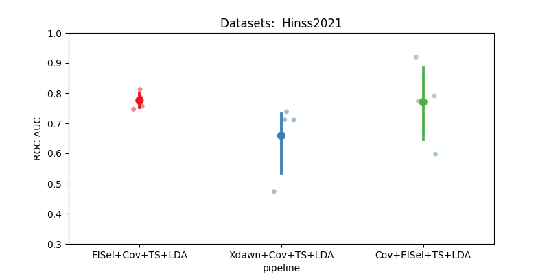

Note
Go to the end to download the full example code.
Hinss2021 classification example#
This example shows how to use the Hinss2021 dataset with the resting state paradigm.
In this example, we aim to determine the most effective channel selection strategy
for the moabb.datasets.Hinss2021 dataset.
The pipelines under consideration are:
Xdawn
Electrode selection based on time epochs data
Electrode selection based on covariance matrices
# License: BSD (3-clause)
import warnings
import numpy as np
import seaborn as sns
from matplotlib import pyplot as plt
from pyriemann.channelselection import ElectrodeSelection
from pyriemann.estimation import Covariances
from pyriemann.spatialfilters import Xdawn
from pyriemann.tangentspace import TangentSpace
from sklearn.base import TransformerMixin
from sklearn.discriminant_analysis import LinearDiscriminantAnalysis as LDA
from sklearn.pipeline import make_pipeline
from moabb import set_log_level
from moabb.datasets import Hinss2021
from moabb.evaluations import CrossSessionEvaluation
from moabb.paradigms import RestingStateToP300Adapter
# Suppressing future and runtime warnings for cleaner output
warnings.simplefilter(action="ignore", category=FutureWarning)
warnings.simplefilter(action="ignore", category=RuntimeWarning)
set_log_level("info")
Create util transformer#
Let’s create a scikit transformer mixin, that will select electrodes based on the covariance information
class EpochSelectChannel(TransformerMixin):
"""Select channels based on covariance information."""
def __init__(self, n_chan, cov_est):
self._chs_idx = None
self.n_chan = n_chan
self.cov_est = cov_est
def fit(self, X, _y=None):
# Get the covariances of the channels for each epoch.
covs = Covariances(estimator=self.cov_est).fit_transform(X)
# Get the average covariance between the channels
m = np.mean(covs, axis=0)
# Select the `n_chan` channels having the maximum covariances.
indices = np.unravel_index(
np.argpartition(m, -self.n_chan, axis=None)[-self.n_chan :], m.shape
)
# We will keep only these channels for the transform step.
self._chs_idx = np.unique(indices)
return self
def transform(self, X):
return X[:, self._chs_idx, :]
Initialization Process#
Define the experimental paradigm object (RestingState)
Load the datasets
Select a subset of subjects and specific events for analysis
# Here we define the mne events for the RestingState paradigm.
events = dict(easy=2, diff=3)
# The paradigm is adapted to the P300 paradigm.
paradigm = RestingStateToP300Adapter(events=events, tmin=0, tmax=0.5)
# We define a list with the dataset to use
datasets = [Hinss2021()]
# To reduce the computation time in the example, we will only use the
# first two subjects.
n__subjects = 2
title = "Datasets: "
for dataset in datasets:
title = title + " " + dataset.code
dataset.subject_list = dataset.subject_list[:n__subjects]
Create Pipelines#
Pipelines must be a dict of scikit-learning pipeline transformer.
pipelines = {}
pipelines["Xdawn+Cov+TS+LDA"] = make_pipeline(
Xdawn(nfilter=4), Covariances(estimator="lwf"), TangentSpace(), LDA()
)
pipelines["Cov+ElSel+TS+LDA"] = make_pipeline(
Covariances(estimator="lwf"), ElectrodeSelection(nelec=8), TangentSpace(), LDA()
)
# Pay attention here that the channel selection took place before computing the covariances:
# It is done on time epochs.
pipelines["ElSel+Cov+TS+LDA"] = make_pipeline(
EpochSelectChannel(n_chan=8, cov_est="lwf"),
Covariances(estimator="lwf"),
TangentSpace(),
LDA(),
)
Run evaluation#
Compare the pipeline using a cross session evaluation.
# Here should be cross-session
evaluation = CrossSessionEvaluation(
paradigm=paradigm,
datasets=datasets,
overwrite=False,
)
results = evaluation.process(pipelines)
Hinss2021-CrossSession: 0%| | 0/2 [00:00<?, ?it/s]
0%| | 0.00/181M [00:00<?, ?B/s]
0%| | 5.12k/181M [00:00<1:00:11, 50.1kB/s]
0%| | 80.9k/181M [00:00<10:08, 297kB/s]
0%| | 218k/181M [00:00<04:29, 672kB/s]
0%| | 393k/181M [00:00<03:50, 783kB/s]
0%|▏ | 590k/181M [00:00<03:26, 874kB/s]
1%|▏ | 916k/181M [00:00<02:06, 1.43MB/s]
1%|▎ | 1.20M/181M [00:00<01:41, 1.77MB/s]
1%|▎ | 1.40M/181M [00:01<02:02, 1.47MB/s]
1%|▎ | 1.58M/181M [00:01<02:26, 1.22MB/s]
1%|▍ | 1.80M/181M [00:01<02:31, 1.18MB/s]
1%|▍ | 1.94M/181M [00:01<02:29, 1.20MB/s]
1%|▍ | 2.07M/181M [00:01<02:27, 1.21MB/s]
1%|▍ | 2.20M/181M [00:01<02:25, 1.23MB/s]
1%|▌ | 2.40M/181M [00:02<02:33, 1.16MB/s]
1%|▌ | 2.53M/181M [00:02<02:31, 1.18MB/s]
2%|▌ | 2.80M/181M [00:02<01:55, 1.55MB/s]
2%|▋ | 3.04M/181M [00:02<02:04, 1.43MB/s]
2%|▋ | 3.24M/181M [00:02<02:19, 1.27MB/s]
2%|▋ | 3.48M/181M [00:02<01:56, 1.52MB/s]
2%|▊ | 3.65M/181M [00:02<02:18, 1.28MB/s]
2%|▊ | 3.95M/181M [00:03<01:48, 1.64MB/s]
2%|▊ | 4.14M/181M [00:03<02:07, 1.39MB/s]
2%|▉ | 4.38M/181M [00:03<01:49, 1.62MB/s]
3%|▉ | 4.57M/181M [00:03<02:08, 1.37MB/s]
3%|█ | 4.78M/181M [00:03<02:20, 1.26MB/s]
3%|█ | 5.07M/181M [00:03<01:50, 1.59MB/s]
3%|█ | 5.26M/181M [00:04<02:08, 1.37MB/s]
3%|█▏ | 5.51M/181M [00:04<02:10, 1.35MB/s]
3%|█▏ | 5.70M/181M [00:04<02:00, 1.45MB/s]
3%|█▏ | 5.89M/181M [00:04<02:17, 1.28MB/s]
3%|█▎ | 6.18M/181M [00:04<01:47, 1.62MB/s]
4%|█▎ | 6.37M/181M [00:04<02:06, 1.38MB/s]
4%|█▍ | 6.66M/181M [00:05<02:04, 1.41MB/s]
4%|█▍ | 6.87M/181M [00:05<02:13, 1.30MB/s]
4%|█▍ | 7.07M/181M [00:05<02:24, 1.20MB/s]
4%|█▌ | 7.32M/181M [00:05<01:58, 1.47MB/s]
4%|█▌ | 7.54M/181M [00:05<02:09, 1.34MB/s]
4%|█▋ | 7.76M/181M [00:05<01:53, 1.52MB/s]
4%|█▋ | 8.03M/181M [00:05<01:37, 1.77MB/s]
5%|█▋ | 8.23M/181M [00:06<01:55, 1.49MB/s]
5%|█▊ | 8.46M/181M [00:06<02:05, 1.37MB/s]
5%|█▊ | 8.70M/181M [00:06<02:09, 1.33MB/s]
5%|█▊ | 8.93M/181M [00:06<02:14, 1.28MB/s]
5%|█▉ | 9.16M/181M [00:06<02:20, 1.22MB/s]
5%|█▉ | 9.48M/181M [00:07<01:47, 1.59MB/s]
5%|██ | 9.67M/181M [00:07<02:04, 1.38MB/s]
5%|██ | 9.88M/181M [00:07<02:14, 1.27MB/s]
6%|██▏ | 10.2M/181M [00:07<01:46, 1.60MB/s]
6%|██▏ | 10.4M/181M [00:07<01:58, 1.44MB/s]
6%|██▏ | 10.7M/181M [00:07<01:35, 1.79MB/s]
6%|██▎ | 10.9M/181M [00:08<01:51, 1.53MB/s]
6%|██▎ | 11.2M/181M [00:08<01:51, 1.52MB/s]
6%|██▍ | 11.5M/181M [00:08<01:31, 1.85MB/s]
6%|██▍ | 11.8M/181M [00:08<01:47, 1.57MB/s]
7%|██▌ | 12.1M/181M [00:08<01:46, 1.59MB/s]
7%|██▌ | 12.4M/181M [00:08<01:30, 1.87MB/s]
7%|██▋ | 12.6M/181M [00:09<01:47, 1.57MB/s]
7%|██▋ | 12.8M/181M [00:09<01:58, 1.42MB/s]
7%|██▋ | 13.0M/181M [00:09<02:05, 1.34MB/s]
7%|██▊ | 13.3M/181M [00:09<02:05, 1.33MB/s]
7%|██▊ | 13.5M/181M [00:09<02:16, 1.23MB/s]
8%|██▉ | 13.8M/181M [00:09<02:00, 1.39MB/s]
8%|██▉ | 14.2M/181M [00:10<01:28, 1.88MB/s]
8%|███ | 14.5M/181M [00:10<01:43, 1.61MB/s]
8%|███▏ | 14.9M/181M [00:10<01:31, 1.81MB/s]
8%|███▏ | 15.1M/181M [00:10<01:41, 1.63MB/s]
9%|███▎ | 15.5M/181M [00:10<01:19, 2.08MB/s]
9%|███▎ | 15.8M/181M [00:10<01:28, 1.87MB/s]
9%|███▍ | 16.2M/181M [00:11<01:17, 2.14MB/s]
9%|███▍ | 16.5M/181M [00:11<01:24, 1.95MB/s]
9%|███▌ | 16.8M/181M [00:11<01:16, 2.15MB/s]
9%|███▌ | 17.0M/181M [00:11<01:30, 1.81MB/s]
10%|███▌ | 17.3M/181M [00:11<01:38, 1.66MB/s]
10%|███▋ | 17.5M/181M [00:11<01:35, 1.71MB/s]
10%|███▋ | 17.7M/181M [00:11<01:36, 1.70MB/s]
10%|███▋ | 17.9M/181M [00:12<01:52, 1.45MB/s]
10%|███▊ | 18.0M/181M [00:12<01:51, 1.46MB/s]
10%|███▊ | 18.4M/181M [00:12<01:24, 1.92MB/s]
10%|███▉ | 18.7M/181M [00:12<01:31, 1.77MB/s]
10%|███▉ | 19.0M/181M [00:12<01:21, 1.98MB/s]
11%|████ | 19.2M/181M [00:12<01:38, 1.65MB/s]
11%|████ | 19.5M/181M [00:13<01:34, 1.70MB/s]
11%|████▏ | 19.9M/181M [00:13<01:19, 2.02MB/s]
11%|████▏ | 20.1M/181M [00:13<01:32, 1.74MB/s]
11%|████▎ | 20.4M/181M [00:13<01:35, 1.69MB/s]
11%|████▎ | 20.7M/181M [00:13<01:43, 1.54MB/s]
12%|████▍ | 20.9M/181M [00:13<01:48, 1.47MB/s]
12%|████▍ | 21.3M/181M [00:14<01:38, 1.61MB/s]
12%|████▌ | 21.6M/181M [00:14<01:22, 1.92MB/s]
12%|████▌ | 21.8M/181M [00:14<01:36, 1.64MB/s]
12%|████▌ | 22.0M/181M [00:14<01:52, 1.41MB/s]
12%|████▋ | 22.2M/181M [00:14<01:41, 1.56MB/s]
12%|████▋ | 22.4M/181M [00:14<01:59, 1.33MB/s]
12%|████▋ | 22.6M/181M [00:15<02:12, 1.20MB/s]
13%|████▊ | 22.9M/181M [00:15<01:40, 1.58MB/s]
13%|████▊ | 23.1M/181M [00:15<01:52, 1.40MB/s]
13%|████▉ | 23.3M/181M [00:15<02:04, 1.27MB/s]
13%|████▉ | 23.6M/181M [00:15<01:41, 1.55MB/s]
13%|████▉ | 23.8M/181M [00:15<01:57, 1.34MB/s]
13%|█████ | 24.0M/181M [00:16<02:11, 1.20MB/s]
13%|█████ | 24.2M/181M [00:16<01:42, 1.53MB/s]
14%|█████▏ | 24.5M/181M [00:16<01:53, 1.38MB/s]
14%|█████▏ | 24.7M/181M [00:16<01:54, 1.37MB/s]
14%|█████▏ | 25.0M/181M [00:16<01:57, 1.33MB/s]
14%|█████▎ | 25.2M/181M [00:16<01:37, 1.61MB/s]
14%|█████▎ | 25.4M/181M [00:17<01:52, 1.38MB/s]
14%|█████▍ | 25.7M/181M [00:17<01:59, 1.30MB/s]
14%|█████▍ | 26.0M/181M [00:17<01:29, 1.74MB/s]
14%|█████▌ | 26.2M/181M [00:17<01:43, 1.50MB/s]
15%|█████▌ | 26.5M/181M [00:17<01:24, 1.82MB/s]
15%|█████▌ | 26.7M/181M [00:17<01:39, 1.56MB/s]
15%|█████▋ | 27.0M/181M [00:18<01:44, 1.47MB/s]
15%|█████▋ | 27.3M/181M [00:18<01:25, 1.79MB/s]
15%|█████▊ | 27.5M/181M [00:18<01:40, 1.53MB/s]
15%|█████▊ | 27.9M/181M [00:18<01:28, 1.73MB/s]
16%|█████▉ | 28.2M/181M [00:18<01:17, 1.97MB/s]
16%|█████▉ | 28.4M/181M [00:18<01:31, 1.67MB/s]
16%|██████ | 28.8M/181M [00:19<01:32, 1.65MB/s]
16%|██████ | 29.0M/181M [00:19<01:22, 1.84MB/s]
16%|██████▏ | 29.3M/181M [00:19<01:32, 1.64MB/s]
16%|██████▏ | 29.6M/181M [00:19<01:33, 1.62MB/s]
17%|██████▎ | 30.0M/181M [00:19<01:14, 2.02MB/s]
17%|██████▎ | 30.2M/181M [00:19<01:27, 1.72MB/s]
17%|██████▍ | 30.4M/181M [00:20<01:36, 1.57MB/s]
17%|██████▍ | 30.7M/181M [00:20<01:35, 1.57MB/s]
17%|██████▌ | 31.0M/181M [00:20<01:25, 1.75MB/s]
17%|██████▌ | 31.2M/181M [00:20<01:40, 1.49MB/s]
17%|██████▌ | 31.5M/181M [00:20<01:23, 1.80MB/s]
18%|██████▋ | 31.7M/181M [00:20<01:36, 1.55MB/s]
18%|██████▋ | 31.9M/181M [00:20<01:26, 1.72MB/s]
18%|██████▋ | 32.1M/181M [00:21<01:42, 1.46MB/s]
18%|██████▊ | 32.4M/181M [00:21<01:42, 1.46MB/s]
18%|██████▊ | 32.7M/181M [00:21<01:47, 1.39MB/s]
18%|██████▉ | 33.0M/181M [00:21<01:44, 1.42MB/s]
18%|██████▉ | 33.1M/181M [00:21<01:42, 1.45MB/s]
18%|███████ | 33.4M/181M [00:21<01:29, 1.65MB/s]
19%|███████ | 33.6M/181M [00:22<01:38, 1.50MB/s]
19%|███████ | 33.9M/181M [00:22<01:44, 1.41MB/s]
19%|███████▏ | 34.3M/181M [00:22<01:15, 1.94MB/s]
19%|███████▏ | 34.5M/181M [00:22<01:28, 1.66MB/s]
19%|███████▎ | 35.0M/181M [00:22<01:02, 2.34MB/s]
19%|███████▍ | 35.3M/181M [00:22<01:12, 2.01MB/s]
20%|███████▍ | 35.5M/181M [00:23<01:23, 1.74MB/s]
20%|███████▌ | 35.8M/181M [00:23<01:15, 1.93MB/s]
20%|███████▌ | 36.0M/181M [00:23<01:29, 1.62MB/s]
20%|███████▌ | 36.2M/181M [00:23<01:22, 1.76MB/s]
20%|███████▋ | 36.5M/181M [00:23<01:28, 1.64MB/s]
20%|███████▋ | 36.7M/181M [00:23<01:41, 1.42MB/s]
20%|███████▊ | 37.1M/181M [00:24<01:17, 1.86MB/s]
21%|███████▊ | 37.3M/181M [00:24<01:30, 1.59MB/s]
21%|███████▊ | 37.5M/181M [00:24<01:42, 1.40MB/s]
21%|███████▉ | 37.8M/181M [00:24<01:21, 1.76MB/s]
21%|███████▉ | 38.0M/181M [00:24<01:34, 1.51MB/s]
21%|████████ | 38.3M/181M [00:24<01:21, 1.75MB/s]
21%|████████ | 38.5M/181M [00:25<01:34, 1.50MB/s]
21%|████████ | 38.7M/181M [00:25<01:48, 1.31MB/s]
21%|████████▏ | 38.8M/181M [00:25<02:03, 1.15MB/s]
22%|████████▏ | 39.1M/181M [00:25<01:36, 1.47MB/s]
22%|████████▏ | 39.3M/181M [00:25<01:51, 1.27MB/s]
22%|████████▎ | 39.8M/181M [00:25<01:26, 1.63MB/s]
22%|████████▍ | 40.0M/181M [00:26<01:33, 1.50MB/s]
22%|████████▍ | 40.2M/181M [00:26<01:44, 1.34MB/s]
22%|████████▍ | 40.5M/181M [00:26<01:27, 1.61MB/s]
22%|████████▌ | 40.7M/181M [00:26<01:37, 1.43MB/s]
23%|████████▌ | 41.1M/181M [00:26<01:12, 1.92MB/s]
23%|████████▋ | 41.3M/181M [00:26<01:39, 1.40MB/s]
23%|████████▋ | 41.6M/181M [00:27<01:26, 1.61MB/s]
23%|████████▊ | 41.8M/181M [00:27<01:38, 1.42MB/s]
23%|████████▊ | 42.0M/181M [00:27<01:43, 1.34MB/s]
23%|████████▊ | 42.3M/181M [00:27<01:25, 1.63MB/s]
23%|████████▉ | 42.5M/181M [00:27<01:38, 1.41MB/s]
24%|████████▉ | 42.8M/181M [00:27<01:31, 1.51MB/s]
24%|█████████ | 43.1M/181M [00:28<01:14, 1.86MB/s]
24%|█████████ | 43.4M/181M [00:28<01:07, 2.04MB/s]
24%|█████████▏ | 43.6M/181M [00:28<01:19, 1.72MB/s]
24%|█████████▏ | 43.9M/181M [00:28<01:09, 1.97MB/s]
24%|█████████▎ | 44.2M/181M [00:28<01:22, 1.66MB/s]
25%|█████████▎ | 44.4M/181M [00:28<01:16, 1.79MB/s]
25%|█████████▎ | 44.6M/181M [00:28<01:30, 1.51MB/s]
25%|█████████▍ | 44.8M/181M [00:29<01:38, 1.38MB/s]
25%|█████████▍ | 45.2M/181M [00:29<01:25, 1.58MB/s]
25%|█████████▌ | 45.4M/181M [00:29<01:40, 1.35MB/s]
25%|█████████▌ | 45.5M/181M [00:29<01:57, 1.16MB/s]
25%|█████████▋ | 46.0M/181M [00:29<01:13, 1.84MB/s]
26%|█████████▋ | 46.4M/181M [00:29<00:57, 2.34MB/s]
26%|█████████▊ | 46.7M/181M [00:30<01:19, 1.70MB/s]
26%|█████████▊ | 46.9M/181M [00:30<01:27, 1.54MB/s]
26%|█████████▉ | 47.2M/181M [00:30<01:13, 1.82MB/s]
26%|█████████▉ | 47.5M/181M [00:30<01:37, 1.37MB/s]
26%|██████████ | 47.7M/181M [00:31<01:47, 1.24MB/s]
26%|██████████ | 47.8M/181M [00:31<01:42, 1.30MB/s]
27%|██████████ | 48.1M/181M [00:31<01:38, 1.35MB/s]
27%|██████████▏ | 48.4M/181M [00:31<01:31, 1.45MB/s]
27%|██████████▏ | 48.6M/181M [00:31<01:46, 1.24MB/s]
27%|██████████▎ | 48.9M/181M [00:31<01:37, 1.36MB/s]
27%|██████████▎ | 49.0M/181M [00:32<01:38, 1.34MB/s]
27%|██████████▎ | 49.2M/181M [00:32<01:49, 1.21MB/s]
27%|██████████▍ | 49.5M/181M [00:32<01:29, 1.47MB/s]
28%|██████████▍ | 49.8M/181M [00:32<01:08, 1.92MB/s]
28%|██████████▌ | 50.0M/181M [00:32<01:20, 1.62MB/s]
28%|██████████▌ | 50.3M/181M [00:32<01:32, 1.42MB/s]
28%|██████████▌ | 50.4M/181M [00:32<01:28, 1.48MB/s]
28%|██████████▌ | 50.6M/181M [00:33<01:46, 1.23MB/s]
28%|██████████▋ | 50.9M/181M [00:33<01:31, 1.42MB/s]
28%|██████████▋ | 51.2M/181M [00:33<01:33, 1.39MB/s]
28%|██████████▊ | 51.5M/181M [00:33<01:14, 1.73MB/s]
29%|██████████▉ | 52.0M/181M [00:33<00:53, 2.40MB/s]
29%|██████████▉ | 52.3M/181M [00:33<01:14, 1.72MB/s]
29%|███████████ | 52.6M/181M [00:34<01:15, 1.69MB/s]
29%|███████████ | 53.0M/181M [00:34<01:03, 2.02MB/s]
29%|███████████▏ | 53.2M/181M [00:34<01:12, 1.76MB/s]
30%|███████████▏ | 53.5M/181M [00:34<01:20, 1.59MB/s]
30%|███████████▎ | 53.7M/181M [00:34<01:10, 1.82MB/s]
30%|███████████▎ | 54.0M/181M [00:34<01:19, 1.59MB/s]
30%|███████████▍ | 54.2M/181M [00:35<01:09, 1.83MB/s]
30%|███████████▍ | 54.5M/181M [00:35<01:21, 1.56MB/s]
30%|███████████▍ | 54.7M/181M [00:35<01:21, 1.54MB/s]
30%|███████████▌ | 55.0M/181M [00:35<01:27, 1.45MB/s]
31%|███████████▌ | 55.3M/181M [00:35<01:11, 1.75MB/s]
31%|███████████▋ | 55.6M/181M [00:35<01:13, 1.71MB/s]
31%|███████████▋ | 55.8M/181M [00:36<01:21, 1.53MB/s]
31%|███████████▊ | 56.0M/181M [00:36<01:32, 1.36MB/s]
31%|███████████▊ | 56.3M/181M [00:36<01:38, 1.26MB/s]
31%|███████████▊ | 56.5M/181M [00:36<01:45, 1.18MB/s]
31%|███████████▉ | 56.7M/181M [00:36<01:45, 1.18MB/s]
31%|███████████▉ | 56.9M/181M [00:37<01:56, 1.07MB/s]
32%|███████████▉ | 57.1M/181M [00:37<01:32, 1.34MB/s]
32%|████████████ | 57.3M/181M [00:37<01:44, 1.18MB/s]
32%|████████████ | 57.6M/181M [00:37<01:23, 1.48MB/s]
32%|████████████ | 57.7M/181M [00:37<01:36, 1.28MB/s]
32%|████████████▏ | 58.1M/181M [00:37<01:20, 1.54MB/s]
32%|████████████▎ | 58.4M/181M [00:38<01:26, 1.42MB/s]
32%|████████████▎ | 58.6M/181M [00:38<01:14, 1.64MB/s]
32%|████████████▎ | 58.8M/181M [00:38<01:25, 1.42MB/s]
33%|████████████▍ | 59.2M/181M [00:38<01:05, 1.87MB/s]
33%|████████████▍ | 59.4M/181M [00:38<01:16, 1.60MB/s]
33%|████████████▌ | 59.6M/181M [00:38<01:28, 1.38MB/s]
33%|████████████▌ | 59.9M/181M [00:39<01:12, 1.68MB/s]
33%|████████████▋ | 60.2M/181M [00:39<01:11, 1.69MB/s]
33%|████████████▋ | 60.5M/181M [00:39<01:01, 1.95MB/s]
34%|████████████▋ | 60.7M/181M [00:39<01:12, 1.65MB/s]
34%|████████████▊ | 61.0M/181M [00:39<01:02, 1.92MB/s]
34%|████████████▊ | 61.2M/181M [00:39<01:13, 1.63MB/s]
34%|████████████▉ | 61.4M/181M [00:40<01:25, 1.39MB/s]
34%|████████████▉ | 61.7M/181M [00:40<01:24, 1.42MB/s]
34%|█████████████ | 61.9M/181M [00:40<01:29, 1.34MB/s]
34%|█████████████ | 62.2M/181M [00:40<01:27, 1.36MB/s]
35%|█████████████ | 62.5M/181M [00:40<01:12, 1.64MB/s]
35%|█████████████▏ | 62.7M/181M [00:40<01:20, 1.47MB/s]
35%|█████████████▏ | 63.1M/181M [00:41<01:04, 1.83MB/s]
35%|█████████████▎ | 63.3M/181M [00:41<01:10, 1.68MB/s]
35%|█████████████▎ | 63.6M/181M [00:41<01:00, 1.94MB/s]
35%|█████████████▍ | 63.9M/181M [00:41<01:11, 1.65MB/s]
35%|█████████████▍ | 64.0M/181M [00:41<01:22, 1.41MB/s]
35%|█████████████▍ | 64.2M/181M [00:41<01:35, 1.22MB/s]
36%|█████████████▌ | 64.4M/181M [00:42<01:43, 1.12MB/s]
36%|█████████████▌ | 64.7M/181M [00:42<01:23, 1.39MB/s]
36%|█████████████▌ | 64.8M/181M [00:42<01:36, 1.20MB/s]
36%|█████████████▋ | 65.1M/181M [00:42<01:32, 1.26MB/s]
36%|█████████████▋ | 65.3M/181M [00:42<01:39, 1.17MB/s]
36%|█████████████▋ | 65.4M/181M [00:42<01:36, 1.19MB/s]
36%|█████████████▊ | 65.7M/181M [00:42<01:14, 1.54MB/s]
36%|█████████████▊ | 65.9M/181M [00:43<01:26, 1.33MB/s]
37%|█████████████▉ | 66.2M/181M [00:43<01:08, 1.68MB/s]
37%|█████████████▉ | 66.4M/181M [00:43<01:20, 1.42MB/s]
37%|█████████████▉ | 66.6M/181M [00:43<01:15, 1.51MB/s]
37%|██████████████ | 66.9M/181M [00:43<01:01, 1.87MB/s]
37%|██████████████ | 67.1M/181M [00:43<01:11, 1.60MB/s]
37%|██████████████▏ | 67.3M/181M [00:43<01:02, 1.80MB/s]
37%|██████████████▏ | 67.9M/181M [00:44<00:53, 2.12MB/s]
38%|██████████████▎ | 68.1M/181M [00:44<01:03, 1.77MB/s]
38%|██████████████▎ | 68.3M/181M [00:44<01:14, 1.52MB/s]
38%|██████████████▍ | 68.5M/181M [00:44<01:05, 1.72MB/s]
38%|██████████████▍ | 68.7M/181M [00:44<01:15, 1.48MB/s]
38%|██████████████▍ | 69.1M/181M [00:44<01:01, 1.81MB/s]
38%|██████████████▌ | 69.4M/181M [00:45<01:04, 1.73MB/s]
38%|██████████████▌ | 69.6M/181M [00:45<01:02, 1.77MB/s]
39%|██████████████▋ | 69.8M/181M [00:45<01:19, 1.40MB/s]
39%|██████████████▋ | 69.9M/181M [00:45<01:17, 1.44MB/s]
39%|██████████████▋ | 70.1M/181M [00:45<01:31, 1.21MB/s]
39%|██████████████▋ | 70.3M/181M [00:45<01:22, 1.35MB/s]
39%|██████████████▊ | 70.4M/181M [00:45<01:19, 1.38MB/s]
39%|██████████████▊ | 70.6M/181M [00:46<01:36, 1.14MB/s]
39%|██████████████▉ | 71.0M/181M [00:46<00:59, 1.84MB/s]
39%|██████████████▉ | 71.2M/181M [00:46<01:09, 1.57MB/s]
40%|███████████████ | 71.6M/181M [00:46<01:05, 1.68MB/s]
40%|███████████████ | 71.8M/181M [00:46<01:15, 1.45MB/s]
40%|███████████████▏ | 72.1M/181M [00:47<01:15, 1.44MB/s]
40%|███████████████▏ | 72.3M/181M [00:47<01:18, 1.38MB/s]
40%|███████████████▏ | 72.5M/181M [00:47<01:26, 1.26MB/s]
40%|███████████████▎ | 72.7M/181M [00:47<01:15, 1.44MB/s]
40%|███████████████▎ | 72.9M/181M [00:47<01:28, 1.23MB/s]
40%|███████████████▎ | 73.0M/181M [00:47<01:39, 1.09MB/s]
41%|███████████████▍ | 73.3M/181M [00:48<01:15, 1.43MB/s]
41%|███████████████▍ | 73.5M/181M [00:48<01:27, 1.23MB/s]
41%|███████████████▍ | 73.8M/181M [00:48<01:20, 1.33MB/s]
41%|███████████████▌ | 74.0M/181M [00:48<01:22, 1.30MB/s]
41%|███████████████▌ | 74.3M/181M [00:48<01:24, 1.26MB/s]
41%|███████████████▋ | 74.6M/181M [00:48<01:07, 1.58MB/s]
41%|███████████████▋ | 75.0M/181M [00:49<01:00, 1.75MB/s]
42%|███████████████▊ | 75.2M/181M [00:49<01:08, 1.55MB/s]
42%|███████████████▊ | 75.5M/181M [00:49<00:57, 1.84MB/s]
42%|███████████████▉ | 75.7M/181M [00:49<01:04, 1.62MB/s]
42%|███████████████▉ | 76.0M/181M [00:49<00:56, 1.87MB/s]
42%|████████████████ | 76.2M/181M [00:49<01:06, 1.58MB/s]
42%|████████████████ | 76.5M/181M [00:50<01:07, 1.54MB/s]
42%|████████████████ | 76.7M/181M [00:50<01:06, 1.58MB/s]
42%|████████████████▏ | 76.9M/181M [00:50<01:16, 1.36MB/s]
43%|████████████████▏ | 77.3M/181M [00:50<00:56, 1.83MB/s]
43%|████████████████▎ | 77.6M/181M [00:50<00:46, 2.25MB/s]
43%|████████████████▎ | 77.9M/181M [00:50<01:05, 1.58MB/s]
43%|████████████████▍ | 78.2M/181M [00:51<00:53, 1.90MB/s]
43%|████████████████▍ | 78.4M/181M [00:51<01:01, 1.67MB/s]
43%|████████████████▌ | 78.7M/181M [00:51<01:09, 1.47MB/s]
44%|████████████████▌ | 79.0M/181M [00:51<01:09, 1.48MB/s]
44%|████████████████▋ | 79.3M/181M [00:51<01:02, 1.62MB/s]
44%|████████████████▋ | 79.6M/181M [00:51<01:07, 1.50MB/s]
44%|████████████████▊ | 79.8M/181M [00:52<01:00, 1.68MB/s]
44%|████████████████▊ | 80.0M/181M [00:52<01:10, 1.43MB/s]
44%|████████████████▉ | 80.5M/181M [00:52<00:44, 2.24MB/s]
45%|████████████████▉ | 80.8M/181M [00:52<00:51, 1.93MB/s]
45%|█████████████████ | 81.5M/181M [00:52<00:34, 2.85MB/s]
45%|█████████████████▏ | 81.8M/181M [00:52<00:40, 2.47MB/s]
45%|█████████████████▏ | 82.1M/181M [00:53<00:54, 1.81MB/s]
46%|█████████████████▎ | 82.5M/181M [00:53<00:55, 1.79MB/s]
46%|█████████████████▍ | 82.8M/181M [00:53<00:45, 2.14MB/s]
46%|█████████████████▍ | 83.1M/181M [00:53<00:51, 1.88MB/s]
46%|█████████████████▍ | 83.3M/181M [00:53<00:59, 1.65MB/s]
46%|█████████████████▌ | 83.5M/181M [00:54<01:07, 1.45MB/s]
46%|█████████████████▌ | 83.8M/181M [00:54<00:56, 1.73MB/s]
46%|█████████████████▋ | 84.1M/181M [00:54<00:48, 1.99MB/s]
47%|█████████████████▋ | 84.4M/181M [00:54<00:53, 1.79MB/s]
47%|█████████████████▊ | 84.8M/181M [00:54<00:44, 2.16MB/s]
47%|█████████████████▊ | 85.0M/181M [00:54<00:51, 1.87MB/s]
47%|█████████████████▉ | 85.3M/181M [00:54<00:48, 1.97MB/s]
47%|█████████████████▉ | 85.5M/181M [00:55<00:54, 1.76MB/s]
47%|██████████████████ | 85.9M/181M [00:55<00:44, 2.15MB/s]
48%|██████████████████ | 86.1M/181M [00:55<00:52, 1.82MB/s]
48%|██████████████████▏ | 86.4M/181M [00:55<01:00, 1.56MB/s]
48%|██████████████████▏ | 86.6M/181M [00:55<00:55, 1.71MB/s]
48%|██████████████████▎ | 87.0M/181M [00:55<00:52, 1.79MB/s]
48%|██████████████████▎ | 87.2M/181M [00:55<00:50, 1.86MB/s]
48%|██████████████████▍ | 87.6M/181M [00:56<00:48, 1.91MB/s]
48%|██████████████████▍ | 87.8M/181M [00:56<00:48, 1.94MB/s]
49%|██████████████████▌ | 88.2M/181M [00:56<00:38, 2.40MB/s]
49%|██████████████████▌ | 88.4M/181M [00:56<00:40, 2.29MB/s]
49%|██████████████████▌ | 88.7M/181M [00:56<00:49, 1.86MB/s]
49%|██████████████████▋ | 88.9M/181M [00:56<00:48, 1.88MB/s]
49%|██████████████████▋ | 89.1M/181M [00:56<00:58, 1.56MB/s]
49%|██████████████████▊ | 89.3M/181M [00:57<01:01, 1.48MB/s]
50%|██████████████████▊ | 89.7M/181M [00:57<00:48, 1.89MB/s]
50%|██████████████████▉ | 90.1M/181M [00:57<00:38, 2.33MB/s]
50%|██████████████████▉ | 90.4M/181M [00:57<00:34, 2.61MB/s]
50%|███████████████████ | 90.7M/181M [00:57<00:50, 1.79MB/s]
50%|███████████████████ | 90.9M/181M [00:57<00:56, 1.60MB/s]
50%|███████████████████▏ | 91.2M/181M [00:58<00:59, 1.50MB/s]
51%|███████████████████▏ | 91.6M/181M [00:58<00:46, 1.93MB/s]
51%|███████████████████▎ | 91.9M/181M [00:58<00:49, 1.81MB/s]
51%|███████████████████▎ | 92.1M/181M [00:58<00:54, 1.63MB/s]
51%|███████████████████▍ | 92.4M/181M [00:58<00:47, 1.87MB/s]
51%|███████████████████▍ | 92.6M/181M [00:58<00:54, 1.61MB/s]
51%|███████████████████▌ | 93.0M/181M [00:59<00:45, 1.94MB/s]
51%|███████████████████▌ | 93.2M/181M [00:59<00:52, 1.66MB/s]
52%|███████████████████▌ | 93.4M/181M [00:59<01:01, 1.43MB/s]
52%|███████████████████▋ | 93.7M/181M [00:59<00:51, 1.71MB/s]
52%|███████████████████▋ | 93.9M/181M [00:59<00:59, 1.47MB/s]
52%|███████████████████▊ | 94.1M/181M [00:59<01:04, 1.35MB/s]
52%|███████████████████▊ | 94.4M/181M [01:00<00:52, 1.64MB/s]
52%|███████████████████▊ | 94.6M/181M [01:00<00:57, 1.50MB/s]
52%|███████████████████▉ | 94.9M/181M [01:00<00:55, 1.55MB/s]
53%|████████████████████ | 95.3M/181M [01:00<00:42, 2.00MB/s]
53%|████████████████████ | 95.6M/181M [01:00<00:49, 1.72MB/s]
53%|████████████████████ | 95.8M/181M [01:00<00:44, 1.93MB/s]
53%|████████████████████▏ | 96.1M/181M [01:00<00:51, 1.64MB/s]
53%|████████████████████▏ | 96.3M/181M [01:01<00:56, 1.50MB/s]
53%|████████████████████▏ | 96.5M/181M [01:01<00:54, 1.54MB/s]
53%|████████████████████▎ | 96.7M/181M [01:01<00:49, 1.72MB/s]
54%|████████████████████▎ | 96.9M/181M [01:01<00:58, 1.43MB/s]
54%|████████████████████▍ | 97.2M/181M [01:01<00:53, 1.57MB/s]
54%|████████████████████▍ | 97.5M/181M [01:01<00:56, 1.49MB/s]
54%|████████████████████▌ | 97.8M/181M [01:02<00:46, 1.79MB/s]
54%|████████████████████▌ | 98.2M/181M [01:02<00:35, 2.32MB/s]
54%|████████████████████▋ | 98.5M/181M [01:02<00:50, 1.65MB/s]
55%|████████████████████▋ | 98.8M/181M [01:02<00:42, 1.95MB/s]
55%|████████████████████▊ | 99.1M/181M [01:02<00:47, 1.71MB/s]
55%|████████████████████▊ | 99.4M/181M [01:02<00:39, 2.09MB/s]
55%|████████████████████▉ | 99.7M/181M [01:03<00:45, 1.81MB/s]
55%|████████████████████▉ | 99.9M/181M [01:03<00:51, 1.57MB/s]
55%|█████████████████████▌ | 100M/181M [01:03<00:43, 1.86MB/s]
56%|█████████████████████▋ | 101M/181M [01:03<00:43, 1.86MB/s]
56%|█████████████████████▋ | 101M/181M [01:03<00:41, 1.94MB/s]
56%|█████████████████████▊ | 101M/181M [01:03<00:34, 2.29MB/s]
56%|█████████████████████▊ | 101M/181M [01:03<00:41, 1.91MB/s]
56%|█████████████████████▉ | 102M/181M [01:04<00:38, 2.04MB/s]
56%|█████████████████████▉ | 102M/181M [01:04<00:44, 1.78MB/s]
57%|██████████████████████ | 102M/181M [01:04<00:38, 2.06MB/s]
57%|██████████████████████ | 103M/181M [01:04<00:44, 1.75MB/s]
57%|██████████████████████▏ | 103M/181M [01:04<00:43, 1.80MB/s]
57%|██████████████████████▏ | 103M/181M [01:04<00:35, 2.21MB/s]
57%|██████████████████████▎ | 104M/181M [01:05<00:36, 2.13MB/s]
57%|██████████████████████▍ | 104M/181M [01:05<00:38, 2.02MB/s]
58%|██████████████████████▍ | 104M/181M [01:05<00:37, 2.05MB/s]
58%|██████████████████████▍ | 104M/181M [01:05<00:43, 1.75MB/s]
58%|██████████████████████▌ | 105M/181M [01:05<00:37, 2.01MB/s]
58%|██████████████████████▋ | 105M/181M [01:05<00:39, 1.94MB/s]
58%|██████████████████████▋ | 105M/181M [01:05<00:32, 2.30MB/s]
58%|██████████████████████▊ | 106M/181M [01:06<00:29, 2.53MB/s]
59%|██████████████████████▊ | 106M/181M [01:06<00:35, 2.09MB/s]
59%|██████████████████████▉ | 106M/181M [01:06<00:38, 1.96MB/s]
59%|██████████████████████▉ | 107M/181M [01:06<00:42, 1.74MB/s]
59%|███████████████████████ | 107M/181M [01:06<00:38, 1.94MB/s]
59%|███████████████████████ | 107M/181M [01:06<00:44, 1.65MB/s]
59%|███████████████████████▏ | 107M/181M [01:07<00:37, 1.95MB/s]
60%|███████████████████████▏ | 108M/181M [01:07<00:37, 1.94MB/s]
60%|███████████████████████▎ | 108M/181M [01:07<00:37, 1.94MB/s]
60%|███████████████████████▎ | 108M/181M [01:07<00:45, 1.61MB/s]
60%|███████████████████████▍ | 109M/181M [01:07<00:36, 1.97MB/s]
60%|███████████████████████▍ | 109M/181M [01:07<00:42, 1.70MB/s]
60%|███████████████████████▍ | 109M/181M [01:07<00:38, 1.86MB/s]
60%|███████████████████████▌ | 109M/181M [01:08<00:37, 1.91MB/s]
60%|███████████████████████▌ | 109M/181M [01:08<00:36, 1.94MB/s]
61%|███████████████████████▋ | 110M/181M [01:08<00:45, 1.58MB/s]
61%|███████████████████████▋ | 110M/181M [01:08<00:46, 1.52MB/s]
61%|███████████████████████▊ | 110M/181M [01:08<00:36, 1.94MB/s]
61%|███████████████████████▊ | 111M/181M [01:08<00:30, 2.33MB/s]
61%|███████████████████████▉ | 111M/181M [01:08<00:36, 1.94MB/s]
61%|███████████████████████▉ | 111M/181M [01:09<00:42, 1.65MB/s]
62%|████████████████████████ | 111M/181M [01:09<00:42, 1.62MB/s]
62%|████████████████████████ | 112M/181M [01:09<00:36, 1.92MB/s]
62%|████████████████████████▏ | 112M/181M [01:09<00:42, 1.64MB/s]
62%|████████████████████████▏ | 112M/181M [01:09<00:40, 1.68MB/s]
62%|████████████████████████▏ | 112M/181M [01:09<00:48, 1.41MB/s]
62%|████████████████████████▎ | 113M/181M [01:09<00:36, 1.88MB/s]
62%|████████████████████████▎ | 113M/181M [01:10<00:42, 1.60MB/s]
63%|████████████████████████▍ | 113M/181M [01:10<00:49, 1.38MB/s]
63%|████████████████████████▍ | 113M/181M [01:10<00:55, 1.21MB/s]
63%|████████████████████████▍ | 114M/181M [01:10<00:41, 1.62MB/s]
63%|████████████████████████▌ | 114M/181M [01:10<00:43, 1.54MB/s]
63%|████████████████████████▌ | 114M/181M [01:10<00:36, 1.84MB/s]
63%|████████████████████████▋ | 114M/181M [01:11<00:42, 1.57MB/s]
63%|████████████████████████▋ | 115M/181M [01:11<00:34, 1.90MB/s]
64%|████████████████████████▊ | 115M/181M [01:11<00:37, 1.77MB/s]
64%|████████████████████████▊ | 115M/181M [01:11<00:31, 2.07MB/s]
64%|████████████████████████▉ | 116M/181M [01:11<00:37, 1.75MB/s]
64%|████████████████████████▉ | 116M/181M [01:11<00:43, 1.51MB/s]
64%|█████████████████████████ | 116M/181M [01:12<00:38, 1.71MB/s]
64%|█████████████████████████ | 116M/181M [01:12<00:43, 1.48MB/s]
64%|█████████████████████████ | 117M/181M [01:12<00:43, 1.49MB/s]
65%|█████████████████████████▏ | 117M/181M [01:12<00:39, 1.63MB/s]
65%|█████████████████████████▏ | 117M/181M [01:12<00:35, 1.81MB/s]
65%|█████████████████████████▎ | 117M/181M [01:12<00:34, 1.84MB/s]
65%|█████████████████████████▎ | 118M/181M [01:12<00:30, 2.09MB/s]
65%|█████████████████████████▍ | 118M/181M [01:13<00:32, 1.92MB/s]
65%|█████████████████████████▍ | 118M/181M [01:13<00:37, 1.68MB/s]
65%|█████████████████████████▌ | 119M/181M [01:13<00:34, 1.83MB/s]
66%|█████████████████████████▌ | 119M/181M [01:13<00:40, 1.54MB/s]
66%|█████████████████████████▋ | 119M/181M [01:13<00:35, 1.75MB/s]
66%|█████████████████████████▋ | 119M/181M [01:13<00:42, 1.46MB/s]
66%|█████████████████████████▋ | 119M/181M [01:14<00:47, 1.30MB/s]
66%|█████████████████████████▊ | 120M/181M [01:14<00:51, 1.20MB/s]
66%|█████████████████████████▊ | 120M/181M [01:14<00:54, 1.13MB/s]
66%|█████████████████████████▊ | 120M/181M [01:14<00:39, 1.55MB/s]
66%|█████████████████████████▉ | 120M/181M [01:14<00:41, 1.46MB/s]
67%|█████████████████████████▉ | 121M/181M [01:15<00:40, 1.48MB/s]
67%|██████████████████████████ | 121M/181M [01:15<00:34, 1.74MB/s]
67%|██████████████████████████▏ | 121M/181M [01:15<00:30, 1.97MB/s]
67%|██████████████████████████▏ | 122M/181M [01:15<00:29, 2.00MB/s]
67%|██████████████████████████▎ | 122M/181M [01:15<00:33, 1.76MB/s]
68%|██████████████████████████▎ | 122M/181M [01:15<00:27, 2.13MB/s]
68%|██████████████████████████▍ | 123M/181M [01:15<00:30, 1.94MB/s]
68%|██████████████████████████▍ | 123M/181M [01:16<00:28, 2.06MB/s]
68%|██████████████████████████▌ | 123M/181M [01:16<00:27, 2.10MB/s]
68%|██████████████████████████▌ | 123M/181M [01:16<00:27, 2.14MB/s]
68%|██████████████████████████▋ | 124M/181M [01:16<00:28, 1.99MB/s]
68%|██████████████████████████▋ | 124M/181M [01:16<00:26, 2.15MB/s]
69%|██████████████████████████▋ | 124M/181M [01:16<00:31, 1.79MB/s]
69%|██████████████████████████▊ | 124M/181M [01:16<00:26, 2.12MB/s]
69%|██████████████████████████▊ | 125M/181M [01:16<00:30, 1.85MB/s]
69%|██████████████████████████▉ | 125M/181M [01:17<00:29, 1.90MB/s]
69%|██████████████████████████▉ | 125M/181M [01:17<00:35, 1.58MB/s]
69%|███████████████████████████ | 125M/181M [01:17<00:38, 1.45MB/s]
69%|███████████████████████████ | 126M/181M [01:17<00:30, 1.82MB/s]
70%|███████████████████████████ | 126M/181M [01:17<00:35, 1.55MB/s]
70%|███████████████████████████▏ | 126M/181M [01:17<00:29, 1.85MB/s]
70%|███████████████████████████▏ | 126M/181M [01:18<00:34, 1.58MB/s]
70%|███████████████████████████▎ | 127M/181M [01:18<00:26, 2.04MB/s]
70%|███████████████████████████▎ | 127M/181M [01:18<00:31, 1.74MB/s]
70%|███████████████████████████▍ | 127M/181M [01:18<00:23, 2.25MB/s]
71%|███████████████████████████▌ | 128M/181M [01:18<00:33, 1.58MB/s]
71%|███████████████████████████▌ | 128M/181M [01:18<00:37, 1.42MB/s]
71%|███████████████████████████▌ | 128M/181M [01:19<00:34, 1.53MB/s]
71%|███████████████████████████▋ | 128M/181M [01:19<00:39, 1.34MB/s]
71%|███████████████████████████▋ | 129M/181M [01:19<00:31, 1.68MB/s]
71%|███████████████████████████▊ | 129M/181M [01:19<00:29, 1.76MB/s]
71%|███████████████████████████▊ | 129M/181M [01:19<00:34, 1.49MB/s]
71%|███████████████████████████▊ | 129M/181M [01:19<00:33, 1.53MB/s]
72%|███████████████████████████▉ | 130M/181M [01:19<00:29, 1.74MB/s]
72%|███████████████████████████▉ | 130M/181M [01:20<00:34, 1.47MB/s]
72%|████████████████████████████ | 130M/181M [01:20<00:39, 1.29MB/s]
72%|████████████████████████████ | 130M/181M [01:20<00:31, 1.62MB/s]
72%|████████████████████████████ | 130M/181M [01:20<00:36, 1.39MB/s]
72%|████████████████████████████▏ | 131M/181M [01:20<00:34, 1.45MB/s]
72%|████████████████████████████▏ | 131M/181M [01:20<00:30, 1.64MB/s]
72%|████████████████████████████▏ | 131M/181M [01:21<00:36, 1.37MB/s]
73%|████████████████████████████▎ | 131M/181M [01:21<00:36, 1.38MB/s]
73%|████████████████████████████▎ | 132M/181M [01:21<00:37, 1.33MB/s]
73%|████████████████████████████▍ | 132M/181M [01:21<00:25, 1.92MB/s]
73%|████████████████████████████▍ | 132M/181M [01:21<00:28, 1.74MB/s]
73%|████████████████████████████▌ | 132M/181M [01:21<00:27, 1.76MB/s]
73%|████████████████████████████▌ | 133M/181M [01:21<00:22, 2.10MB/s]
73%|████████████████████████████▋ | 133M/181M [01:22<00:27, 1.76MB/s]
74%|████████████████████████████▋ | 133M/181M [01:22<00:31, 1.50MB/s]
74%|████████████████████████████▋ | 133M/181M [01:22<00:35, 1.35MB/s]
74%|████████████████████████████▊ | 134M/181M [01:22<00:27, 1.70MB/s]
74%|████████████████████████████▊ | 134M/181M [01:22<00:32, 1.46MB/s]
74%|████████████████████████████▉ | 134M/181M [01:23<00:32, 1.43MB/s]
74%|████████████████████████████▉ | 135M/181M [01:23<00:27, 1.70MB/s]
74%|█████████████████████████████ | 135M/181M [01:23<00:31, 1.45MB/s]
75%|█████████████████████████████ | 135M/181M [01:23<00:31, 1.48MB/s]
75%|█████████████████████████████ | 135M/181M [01:23<00:32, 1.42MB/s]
75%|█████████████████████████████▏ | 135M/181M [01:23<00:27, 1.64MB/s]
75%|█████████████████████████████▏ | 136M/181M [01:23<00:28, 1.58MB/s]
75%|█████████████████████████████▎ | 136M/181M [01:24<00:27, 1.65MB/s]
75%|█████████████████████████████▎ | 136M/181M [01:24<00:27, 1.61MB/s]
75%|█████████████████████████████▍ | 136M/181M [01:24<00:22, 1.94MB/s]
76%|█████████████████████████████▍ | 137M/181M [01:24<00:24, 1.77MB/s]
76%|█████████████████████████████▌ | 137M/181M [01:24<00:20, 2.19MB/s]
76%|█████████████████████████████▌ | 137M/181M [01:24<00:22, 1.97MB/s]
76%|█████████████████████████████▋ | 138M/181M [01:24<00:16, 2.62MB/s]
76%|█████████████████████████████▊ | 138M/181M [01:25<00:19, 2.22MB/s]
77%|█████████████████████████████▊ | 139M/181M [01:25<00:21, 1.94MB/s]
77%|█████████████████████████████▉ | 139M/181M [01:25<00:19, 2.11MB/s]
77%|█████████████████████████████▉ | 139M/181M [01:25<00:19, 2.18MB/s]
77%|██████████████████████████████ | 139M/181M [01:25<00:21, 1.92MB/s]
77%|██████████████████████████████ | 140M/181M [01:25<00:19, 2.09MB/s]
77%|██████████████████████████████▏ | 140M/181M [01:26<00:23, 1.74MB/s]
77%|██████████████████████████████▏ | 140M/181M [01:26<00:19, 2.06MB/s]
78%|██████████████████████████████▎ | 140M/181M [01:26<00:17, 2.26MB/s]
78%|██████████████████████████████▎ | 141M/181M [01:26<00:16, 2.48MB/s]
78%|██████████████████████████████▍ | 141M/181M [01:26<00:19, 2.02MB/s]
78%|██████████████████████████████▍ | 141M/181M [01:26<00:22, 1.79MB/s]
78%|██████████████████████████████▌ | 142M/181M [01:26<00:19, 2.01MB/s]
78%|██████████████████████████████▌ | 142M/181M [01:26<00:19, 1.96MB/s]
79%|██████████████████████████████▋ | 142M/181M [01:27<00:17, 2.18MB/s]
79%|██████████████████████████████▋ | 143M/181M [01:27<00:18, 2.05MB/s]
79%|██████████████████████████████▊ | 143M/181M [01:27<00:16, 2.30MB/s]
79%|██████████████████████████████▉ | 143M/181M [01:27<00:14, 2.64MB/s]
79%|██████████████████████████████▉ | 144M/181M [01:27<00:17, 2.18MB/s]
79%|██████████████████████████████▉ | 144M/181M [01:27<00:20, 1.85MB/s]
80%|███████████████████████████████ | 144M/181M [01:27<00:17, 2.06MB/s]
80%|███████████████████████████████▏ | 145M/181M [01:28<00:17, 2.07MB/s]
80%|███████████████████████████████▏ | 145M/181M [01:28<00:15, 2.36MB/s]
80%|███████████████████████████████▎ | 145M/181M [01:28<00:13, 2.72MB/s]
80%|███████████████████████████████▎ | 146M/181M [01:28<00:15, 2.24MB/s]
81%|███████████████████████████████▍ | 146M/181M [01:28<00:18, 1.90MB/s]
81%|███████████████████████████████▍ | 146M/181M [01:28<00:17, 1.95MB/s]
81%|███████████████████████████████▌ | 146M/181M [01:29<00:20, 1.66MB/s]
81%|███████████████████████████████▌ | 147M/181M [01:29<00:16, 2.07MB/s]
81%|███████████████████████████████▋ | 147M/181M [01:29<00:19, 1.77MB/s]
81%|███████████████████████████████▋ | 147M/181M [01:29<00:21, 1.56MB/s]
81%|███████████████████████████████▊ | 148M/181M [01:29<00:16, 2.03MB/s]
82%|███████████████████████████████▊ | 148M/181M [01:29<00:18, 1.76MB/s]
82%|███████████████████████████████▉ | 148M/181M [01:29<00:15, 2.07MB/s]
82%|███████████████████████████████▉ | 148M/181M [01:30<00:18, 1.76MB/s]
82%|████████████████████████████████ | 149M/181M [01:30<00:15, 2.15MB/s]
82%|████████████████████████████████ | 149M/181M [01:30<00:17, 1.83MB/s]
82%|████████████████████████████████▏ | 149M/181M [01:30<00:20, 1.58MB/s]
83%|████████████████████████████████▏ | 149M/181M [01:30<00:21, 1.50MB/s]
83%|████████████████████████████████▏ | 150M/181M [01:30<00:19, 1.63MB/s]
83%|████████████████████████████████▎ | 150M/181M [01:31<00:15, 1.97MB/s]
83%|████████████████████████████████▎ | 150M/181M [01:31<00:18, 1.66MB/s]
83%|████████████████████████████████▍ | 151M/181M [01:31<00:18, 1.65MB/s]
83%|████████████████████████████████▌ | 151M/181M [01:31<00:11, 2.55MB/s]
84%|████████████████████████████████▌ | 151M/181M [01:31<00:11, 2.67MB/s]
84%|████████████████████████████████▋ | 152M/181M [01:31<00:13, 2.24MB/s]
84%|████████████████████████████████▊ | 152M/181M [01:32<00:14, 2.01MB/s]
84%|████████████████████████████████▊ | 152M/181M [01:32<00:11, 2.50MB/s]
84%|████████████████████████████████▉ | 153M/181M [01:32<00:13, 2.16MB/s]
85%|████████████████████████████████▉ | 153M/181M [01:32<00:11, 2.40MB/s]
85%|█████████████████████████████████ | 153M/181M [01:32<00:12, 2.16MB/s]
85%|█████████████████████████████████ | 154M/181M [01:32<00:12, 2.24MB/s]
85%|█████████████████████████████████▏ | 154M/181M [01:32<00:12, 2.16MB/s]
85%|█████████████████████████████████▎ | 154M/181M [01:33<00:10, 2.45MB/s]
85%|█████████████████████████████████▎ | 155M/181M [01:33<00:12, 2.05MB/s]
86%|█████████████████████████████████▍ | 155M/181M [01:33<00:14, 1.75MB/s]
86%|█████████████████████████████████▍ | 155M/181M [01:33<00:11, 2.28MB/s]
86%|█████████████████████████████████▌ | 156M/181M [01:33<00:13, 1.95MB/s]
86%|█████████████████████████████████▌ | 156M/181M [01:33<00:14, 1.70MB/s]
86%|█████████████████████████████████▋ | 156M/181M [01:34<00:14, 1.76MB/s]
86%|█████████████████████████████████▋ | 156M/181M [01:34<00:16, 1.49MB/s]
86%|█████████████████████████████████▋ | 157M/181M [01:34<00:14, 1.68MB/s]
87%|█████████████████████████████████▊ | 157M/181M [01:34<00:14, 1.68MB/s]
87%|█████████████████████████████████▊ | 157M/181M [01:34<00:12, 1.85MB/s]
87%|█████████████████████████████████▉ | 157M/181M [01:34<00:13, 1.75MB/s]
87%|█████████████████████████████████▉ | 158M/181M [01:34<00:11, 2.00MB/s]
87%|██████████████████████████████████ | 158M/181M [01:34<00:09, 2.35MB/s]
87%|██████████████████████████████████ | 158M/181M [01:35<00:11, 1.95MB/s]
88%|██████████████████████████████████▏ | 159M/181M [01:35<00:11, 1.93MB/s]
88%|██████████████████████████████████▎ | 159M/181M [01:35<00:09, 2.23MB/s]
88%|██████████████████████████████████▎ | 159M/181M [01:35<00:11, 1.88MB/s]
88%|██████████████████████████████████▎ | 160M/181M [01:35<00:13, 1.61MB/s]
88%|██████████████████████████████████▍ | 160M/181M [01:36<00:12, 1.73MB/s]
88%|██████████████████████████████████▌ | 160M/181M [01:36<00:11, 1.88MB/s]
89%|██████████████████████████████████▌ | 161M/181M [01:36<00:10, 1.92MB/s]
89%|██████████████████████████████████▋ | 161M/181M [01:36<00:09, 2.19MB/s]
89%|██████████████████████████████████▋ | 161M/181M [01:36<00:10, 1.94MB/s]
89%|██████████████████████████████████▊ | 161M/181M [01:36<00:09, 2.16MB/s]
89%|██████████████████████████████████▊ | 162M/181M [01:36<00:10, 1.85MB/s]
89%|██████████████████████████████████▉ | 162M/181M [01:37<00:10, 1.89MB/s]
90%|██████████████████████████████████▉ | 162M/181M [01:37<00:09, 2.08MB/s]
90%|███████████████████████████████████ | 163M/181M [01:37<00:05, 3.14MB/s]
90%|███████████████████████████████████▏ | 163M/181M [01:37<00:06, 2.58MB/s]
90%|███████████████████████████████████▏ | 164M/181M [01:37<00:08, 2.19MB/s]
90%|███████████████████████████████████▎ | 164M/181M [01:37<00:09, 1.88MB/s]
91%|███████████████████████████████████▎ | 164M/181M [01:38<00:09, 1.83MB/s]
91%|███████████████████████████████████▍ | 164M/181M [01:38<00:09, 1.67MB/s]
91%|███████████████████████████████████▍ | 165M/181M [01:38<00:08, 1.96MB/s]
91%|███████████████████████████████████▌ | 165M/181M [01:38<00:08, 1.87MB/s]
92%|███████████████████████████████████▋ | 166M/181M [01:38<00:05, 2.83MB/s]
92%|███████████████████████████████████▊ | 166M/181M [01:38<00:06, 2.44MB/s]
92%|███████████████████████████████████▊ | 166M/181M [01:39<00:06, 2.12MB/s]
92%|███████████████████████████████████▉ | 167M/181M [01:39<00:07, 1.84MB/s]
92%|███████████████████████████████████▉ | 167M/181M [01:39<00:08, 1.71MB/s]
92%|████████████████████████████████████ | 167M/181M [01:39<00:06, 2.04MB/s]
92%|████████████████████████████████████ | 167M/181M [01:39<00:07, 1.79MB/s]
93%|████████████████████████████████████▏ | 168M/181M [01:39<00:05, 2.49MB/s]
93%|████████████████████████████████████▎ | 168M/181M [01:40<00:05, 2.14MB/s]
93%|████████████████████████████████████▎ | 169M/181M [01:40<00:04, 2.66MB/s]
93%|████████████████████████████████████▍ | 169M/181M [01:40<00:04, 2.40MB/s]
94%|████████████████████████████████████▌ | 169M/181M [01:40<00:04, 2.57MB/s]
94%|████████████████████████████████████▌ | 170M/181M [01:40<00:05, 2.17MB/s]
94%|████████████████████████████████████▋ | 170M/181M [01:40<00:05, 1.97MB/s]
94%|████████████████████████████████████▋ | 170M/181M [01:40<00:05, 2.10MB/s]
94%|████████████████████████████████████▊ | 171M/181M [01:41<00:05, 1.92MB/s]
94%|████████████████████████████████████▊ | 171M/181M [01:41<00:04, 2.20MB/s]
95%|████████████████████████████████████▉ | 171M/181M [01:41<00:05, 1.83MB/s]
95%|████████████████████████████████████▉ | 172M/181M [01:41<00:04, 2.23MB/s]
95%|█████████████████████████████████████ | 172M/181M [01:41<00:04, 1.96MB/s]
95%|█████████████████████████████████████ | 172M/181M [01:41<00:04, 2.16MB/s]
95%|█████████████████████████████████████▏ | 172M/181M [01:42<00:04, 1.82MB/s]
95%|█████████████████████████████████████▏ | 173M/181M [01:42<00:03, 2.11MB/s]
96%|█████████████████████████████████████▎ | 173M/181M [01:42<00:04, 1.82MB/s]
96%|█████████████████████████████████████▎ | 173M/181M [01:42<00:03, 2.28MB/s]
96%|█████████████████████████████████████▍ | 174M/181M [01:42<00:03, 2.04MB/s]
96%|█████████████████████████████████████▌ | 174M/181M [01:42<00:03, 2.00MB/s]
96%|█████████████████████████████████████▌ | 174M/181M [01:42<00:02, 2.23MB/s]
97%|█████████████████████████████████████▋ | 175M/181M [01:43<00:02, 2.16MB/s]
97%|█████████████████████████████████████▋ | 175M/181M [01:43<00:03, 1.85MB/s]
97%|█████████████████████████████████████▊ | 175M/181M [01:43<00:03, 1.73MB/s]
97%|█████████████████████████████████████▊ | 176M/181M [01:43<00:02, 1.92MB/s]
97%|█████████████████████████████████████▉ | 176M/181M [01:43<00:02, 1.76MB/s]
97%|█████████████████████████████████████▉ | 176M/181M [01:43<00:02, 1.78MB/s]
97%|██████████████████████████████████████ | 176M/181M [01:44<00:02, 1.72MB/s]
98%|██████████████████████████████████████ | 177M/181M [01:44<00:02, 1.84MB/s]
98%|██████████████████████████████████████ | 177M/181M [01:44<00:02, 1.68MB/s]
98%|██████████████████████████████████████▏| 177M/181M [01:44<00:02, 1.82MB/s]
98%|██████████████████████████████████████▏| 177M/181M [01:44<00:02, 1.66MB/s]
98%|██████████████████████████████████████▎| 178M/181M [01:44<00:01, 2.12MB/s]
98%|██████████████████████████████████████▎| 178M/181M [01:44<00:01, 1.88MB/s]
99%|██████████████████████████████████████▍| 178M/181M [01:45<00:01, 1.66MB/s]
99%|██████████████████████████████████████▍| 179M/181M [01:45<00:01, 1.67MB/s]
99%|██████████████████████████████████████▌| 179M/181M [01:45<00:01, 2.11MB/s]
99%|██████████████████████████████████████▌| 179M/181M [01:45<00:01, 1.76MB/s]
99%|██████████████████████████████████████▋| 179M/181M [01:45<00:01, 1.55MB/s]
99%|██████████████████████████████████████▋| 180M/181M [01:45<00:01, 1.36MB/s]
99%|██████████████████████████████████████▊| 180M/181M [01:46<00:00, 2.02MB/s]
100%|██████████████████████████████████████▊| 180M/181M [01:46<00:00, 1.75MB/s]
100%|██████████████████████████████████████▉| 181M/181M [01:46<00:00, 1.81MB/s]
100%|██████████████████████████████████████▉| 181M/181M [01:46<00:00, 1.84MB/s]
0%| | 0.00/181M [00:00<?, ?B/s]
100%|████████████████████████████████████████| 181M/181M [00:00<00:00, 789GB/s]
Hinss2021-CrossSession: 50%|█████ | 1/2 [01:59<01:59, 119.64s/it]
0%| | 0.00/181M [00:00<?, ?B/s]
0%| | 12.3k/181M [00:00<33:29, 90.1kB/s]
0%| | 39.9k/181M [00:00<16:24, 184kB/s]
0%| | 196k/181M [00:00<05:33, 543kB/s]
0%| | 360k/181M [00:00<04:25, 679kB/s]
0%| | 528k/181M [00:00<04:01, 749kB/s]
0%|▏ | 748k/181M [00:00<02:48, 1.07MB/s]
0%|▏ | 904k/181M [00:01<03:06, 966kB/s]
1%|▏ | 1.01M/181M [00:01<03:02, 986kB/s]
1%|▎ | 1.18M/181M [00:01<03:11, 939kB/s]
1%|▎ | 1.36M/181M [00:01<03:12, 932kB/s]
1%|▎ | 1.46M/181M [00:01<03:11, 938kB/s]
1%|▎ | 1.59M/181M [00:01<02:57, 1.01MB/s]
1%|▎ | 1.71M/181M [00:01<02:47, 1.07MB/s]
1%|▍ | 1.87M/181M [00:02<03:06, 959kB/s]
1%|▍ | 2.05M/181M [00:02<03:09, 944kB/s]
1%|▍ | 2.23M/181M [00:02<03:13, 924kB/s]
1%|▌ | 2.47M/181M [00:02<02:53, 1.03MB/s]
1%|▌ | 2.64M/181M [00:02<03:04, 966kB/s]
2%|▌ | 2.85M/181M [00:03<02:58, 1.00MB/s]
2%|▋ | 3.10M/181M [00:03<02:45, 1.08MB/s]
2%|▋ | 3.20M/181M [00:03<02:45, 1.07MB/s]
2%|▋ | 3.41M/181M [00:03<02:47, 1.06MB/s]
2%|▋ | 3.55M/181M [00:03<02:36, 1.13MB/s]
2%|▊ | 3.67M/181M [00:03<02:36, 1.14MB/s]
2%|▊ | 3.82M/181M [00:04<03:00, 985kB/s]
2%|▊ | 3.92M/181M [00:04<02:57, 997kB/s]
2%|▊ | 4.02M/181M [00:04<02:56, 1.00MB/s]
2%|▉ | 4.19M/181M [00:04<03:07, 943kB/s]
2%|▉ | 4.32M/181M [00:04<02:54, 1.01MB/s]
2%|▉ | 4.52M/181M [00:04<02:53, 1.02MB/s]
3%|▉ | 4.75M/181M [00:04<02:44, 1.07MB/s]
3%|█ | 5.02M/181M [00:05<02:28, 1.19MB/s]
3%|█ | 5.22M/181M [00:05<02:36, 1.13MB/s]
3%|█▏ | 5.47M/181M [00:05<02:30, 1.16MB/s]
3%|█▏ | 5.70M/181M [00:05<02:30, 1.16MB/s]
3%|█▏ | 5.91M/181M [00:05<02:33, 1.14MB/s]
3%|█▎ | 6.09M/181M [00:06<02:43, 1.07MB/s]
3%|█▎ | 6.27M/181M [00:06<02:50, 1.02MB/s]
4%|█▎ | 6.51M/181M [00:06<02:40, 1.09MB/s]
4%|█▍ | 6.74M/181M [00:06<02:14, 1.30MB/s]
4%|█▍ | 6.96M/181M [00:06<02:20, 1.24MB/s]
4%|█▌ | 7.17M/181M [00:06<02:26, 1.19MB/s]
4%|█▌ | 7.40M/181M [00:07<02:27, 1.18MB/s]
4%|█▌ | 7.64M/181M [00:07<02:24, 1.20MB/s]
4%|█▋ | 7.85M/181M [00:07<02:28, 1.16MB/s]
4%|█▋ | 8.07M/181M [00:07<02:32, 1.14MB/s]
5%|█▋ | 8.33M/181M [00:07<02:24, 1.20MB/s]
5%|█▊ | 8.55M/181M [00:08<02:04, 1.39MB/s]
5%|█▊ | 8.71M/181M [00:08<02:25, 1.19MB/s]
5%|█▊ | 8.88M/181M [00:08<02:37, 1.09MB/s]
5%|█▉ | 9.00M/181M [00:08<02:37, 1.09MB/s]
5%|█▉ | 9.21M/181M [00:08<02:39, 1.08MB/s]
5%|█▉ | 9.39M/181M [00:08<02:47, 1.03MB/s]
5%|██ | 9.71M/181M [00:09<01:58, 1.45MB/s]
5%|██ | 9.88M/181M [00:09<02:17, 1.25MB/s]
6%|██ | 10.1M/181M [00:09<02:26, 1.17MB/s]
6%|██▏ | 10.4M/181M [00:09<02:18, 1.23MB/s]
6%|██▏ | 10.6M/181M [00:09<02:12, 1.29MB/s]
6%|██▎ | 10.9M/181M [00:10<02:16, 1.25MB/s]
6%|██▎ | 11.1M/181M [00:10<02:15, 1.25MB/s]
6%|██▍ | 11.3M/181M [00:10<02:18, 1.22MB/s]
6%|██▍ | 11.6M/181M [00:10<02:20, 1.21MB/s]
6%|██▍ | 11.7M/181M [00:10<02:23, 1.18MB/s]
7%|██▍ | 11.8M/181M [00:10<02:18, 1.22MB/s]
7%|██▌ | 12.0M/181M [00:11<02:27, 1.15MB/s]
7%|██▌ | 12.3M/181M [00:11<02:22, 1.18MB/s]
7%|██▌ | 12.5M/181M [00:11<02:05, 1.34MB/s]
7%|██▋ | 12.6M/181M [00:11<02:21, 1.19MB/s]
7%|██▋ | 12.9M/181M [00:11<02:26, 1.15MB/s]
7%|██▋ | 13.1M/181M [00:11<02:21, 1.18MB/s]
7%|██▊ | 13.3M/181M [00:12<02:19, 1.20MB/s]
7%|██▊ | 13.5M/181M [00:12<02:26, 1.14MB/s]
8%|██▉ | 13.7M/181M [00:12<02:32, 1.10MB/s]
8%|██▉ | 13.9M/181M [00:12<02:40, 1.04MB/s]
8%|██▉ | 14.1M/181M [00:12<02:22, 1.17MB/s]
8%|██▉ | 14.2M/181M [00:12<02:40, 1.04MB/s]
8%|███ | 14.5M/181M [00:13<02:34, 1.08MB/s]
8%|███ | 14.6M/181M [00:13<02:34, 1.08MB/s]
8%|███ | 14.8M/181M [00:13<02:37, 1.05MB/s]
8%|███▏ | 15.0M/181M [00:13<02:36, 1.06MB/s]
8%|███▎ | 15.2M/181M [00:13<02:47, 988kB/s]
9%|███▏ | 15.5M/181M [00:14<02:24, 1.15MB/s]
9%|███▎ | 15.7M/181M [00:14<02:29, 1.10MB/s]
9%|███▎ | 15.8M/181M [00:14<02:24, 1.14MB/s]
9%|███▍ | 16.1M/181M [00:14<02:07, 1.29MB/s]
9%|███▍ | 16.3M/181M [00:14<02:12, 1.24MB/s]
9%|███▍ | 16.6M/181M [00:14<02:18, 1.19MB/s]
9%|███▍ | 16.7M/181M [00:15<02:19, 1.18MB/s]
9%|███▌ | 16.8M/181M [00:15<02:19, 1.18MB/s]
9%|███▌ | 17.0M/181M [00:15<02:34, 1.06MB/s]
9%|███▌ | 17.2M/181M [00:15<02:33, 1.07MB/s]
10%|███▋ | 17.5M/181M [00:15<02:12, 1.24MB/s]
10%|███▋ | 17.7M/181M [00:15<02:20, 1.16MB/s]
10%|███▋ | 17.9M/181M [00:16<02:30, 1.08MB/s]
10%|███▊ | 18.1M/181M [00:16<02:20, 1.16MB/s]
10%|███▊ | 18.3M/181M [00:16<02:23, 1.14MB/s]
10%|███▉ | 18.6M/181M [00:16<02:13, 1.22MB/s]
10%|███▉ | 18.8M/181M [00:16<02:23, 1.13MB/s]
11%|████ | 19.1M/181M [00:17<02:13, 1.22MB/s]
11%|████ | 19.2M/181M [00:17<02:27, 1.10MB/s]
11%|████ | 19.5M/181M [00:17<02:21, 1.14MB/s]
11%|████▏ | 19.7M/181M [00:17<02:04, 1.30MB/s]
11%|████▏ | 19.9M/181M [00:17<01:53, 1.42MB/s]
11%|████▏ | 20.1M/181M [00:17<02:09, 1.24MB/s]
11%|████▎ | 20.4M/181M [00:18<01:58, 1.36MB/s]
11%|████▎ | 20.5M/181M [00:18<02:12, 1.21MB/s]
12%|████▎ | 20.8M/181M [00:18<02:03, 1.30MB/s]
12%|████▍ | 21.0M/181M [00:18<02:02, 1.31MB/s]
12%|████▍ | 21.3M/181M [00:18<01:56, 1.37MB/s]
12%|████▌ | 21.5M/181M [00:19<02:07, 1.25MB/s]
12%|████▌ | 21.7M/181M [00:19<02:13, 1.19MB/s]
12%|████▌ | 22.0M/181M [00:19<01:56, 1.37MB/s]
12%|████▋ | 22.3M/181M [00:19<01:59, 1.33MB/s]
12%|████▋ | 22.5M/181M [00:19<02:01, 1.30MB/s]
13%|████▊ | 22.7M/181M [00:20<02:13, 1.19MB/s]
13%|████▊ | 23.0M/181M [00:20<02:03, 1.28MB/s]
13%|████▊ | 23.2M/181M [00:20<02:06, 1.25MB/s]
13%|████▉ | 23.5M/181M [00:20<02:06, 1.25MB/s]
13%|████▉ | 23.7M/181M [00:20<02:01, 1.30MB/s]
13%|█████ | 24.0M/181M [00:20<01:38, 1.59MB/s]
13%|█████ | 24.2M/181M [00:20<01:36, 1.62MB/s]
13%|█████ | 24.4M/181M [00:21<01:54, 1.37MB/s]
14%|█████▏ | 24.6M/181M [00:21<02:03, 1.27MB/s]
14%|█████▏ | 24.8M/181M [00:21<01:47, 1.45MB/s]
14%|█████▏ | 25.0M/181M [00:21<02:07, 1.23MB/s]
14%|█████▎ | 25.2M/181M [00:21<02:03, 1.26MB/s]
14%|█████▎ | 25.5M/181M [00:22<01:56, 1.34MB/s]
14%|█████▍ | 25.8M/181M [00:22<02:01, 1.28MB/s]
14%|█████▍ | 26.1M/181M [00:22<01:32, 1.67MB/s]
15%|█████▌ | 26.3M/181M [00:22<01:47, 1.43MB/s]
15%|█████▌ | 26.5M/181M [00:22<01:53, 1.37MB/s]
15%|█████▌ | 26.8M/181M [00:22<01:58, 1.30MB/s]
15%|█████▋ | 27.0M/181M [00:23<01:59, 1.29MB/s]
15%|█████▋ | 27.2M/181M [00:23<02:00, 1.27MB/s]
15%|█████▊ | 27.5M/181M [00:23<01:40, 1.52MB/s]
15%|█████▊ | 27.7M/181M [00:23<01:57, 1.31MB/s]
15%|█████▊ | 27.9M/181M [00:23<02:03, 1.24MB/s]
16%|█████▉ | 28.2M/181M [00:24<01:53, 1.35MB/s]
16%|█████▉ | 28.4M/181M [00:24<01:51, 1.37MB/s]
16%|█████▉ | 28.6M/181M [00:24<01:57, 1.30MB/s]
16%|██████ | 28.8M/181M [00:24<02:01, 1.25MB/s]
16%|██████ | 29.1M/181M [00:24<01:41, 1.50MB/s]
16%|██████▏ | 29.2M/181M [00:24<01:59, 1.27MB/s]
16%|██████▏ | 29.4M/181M [00:25<02:19, 1.09MB/s]
16%|██████▏ | 29.6M/181M [00:25<01:58, 1.28MB/s]
16%|██████▏ | 29.8M/181M [00:25<02:11, 1.15MB/s]
17%|██████▎ | 29.9M/181M [00:25<02:08, 1.18MB/s]
17%|██████▎ | 30.1M/181M [00:25<02:12, 1.14MB/s]
17%|██████▍ | 30.4M/181M [00:25<01:59, 1.26MB/s]
17%|██████▍ | 30.6M/181M [00:25<01:49, 1.37MB/s]
17%|██████▍ | 30.8M/181M [00:26<01:35, 1.57MB/s]
17%|██████▌ | 31.0M/181M [00:26<01:55, 1.30MB/s]
17%|██████▌ | 31.3M/181M [00:26<01:32, 1.62MB/s]
17%|██████▌ | 31.5M/181M [00:26<01:49, 1.37MB/s]
17%|██████▋ | 31.6M/181M [00:26<01:45, 1.42MB/s]
18%|██████▋ | 31.8M/181M [00:26<01:43, 1.44MB/s]
18%|██████▋ | 31.9M/181M [00:26<02:07, 1.17MB/s]
18%|██████▋ | 32.1M/181M [00:27<02:20, 1.06MB/s]
18%|██████▊ | 32.3M/181M [00:27<02:12, 1.12MB/s]
18%|██████▊ | 32.6M/181M [00:27<02:01, 1.22MB/s]
18%|██████▉ | 32.9M/181M [00:27<02:03, 1.20MB/s]
18%|██████▉ | 33.2M/181M [00:27<01:49, 1.34MB/s]
18%|███████ | 33.5M/181M [00:28<01:46, 1.39MB/s]
19%|███████ | 33.8M/181M [00:28<01:30, 1.64MB/s]
19%|███████ | 34.0M/181M [00:28<01:42, 1.43MB/s]
19%|███████▏ | 34.2M/181M [00:28<01:49, 1.34MB/s]
19%|███████▏ | 34.5M/181M [00:28<01:23, 1.76MB/s]
19%|███████▎ | 34.7M/181M [00:28<01:36, 1.51MB/s]
19%|███████▎ | 35.0M/181M [00:29<01:44, 1.40MB/s]
19%|███████▍ | 35.2M/181M [00:29<01:56, 1.25MB/s]
20%|███████▍ | 35.5M/181M [00:29<01:32, 1.57MB/s]
20%|███████▍ | 35.7M/181M [00:29<01:39, 1.46MB/s]
20%|███████▌ | 36.0M/181M [00:29<01:24, 1.73MB/s]
20%|███████▌ | 36.2M/181M [00:29<01:38, 1.47MB/s]
20%|███████▋ | 36.4M/181M [00:30<01:54, 1.27MB/s]
20%|███████▋ | 36.6M/181M [00:30<01:33, 1.54MB/s]
20%|███████▋ | 36.8M/181M [00:30<01:48, 1.33MB/s]
20%|███████▊ | 37.0M/181M [00:30<01:58, 1.21MB/s]
21%|███████▊ | 37.3M/181M [00:30<01:34, 1.52MB/s]
21%|███████▊ | 37.4M/181M [00:30<01:50, 1.30MB/s]
21%|███████▉ | 37.6M/181M [00:31<02:07, 1.13MB/s]
21%|███████▉ | 37.8M/181M [00:31<02:09, 1.11MB/s]
21%|████████ | 38.1M/181M [00:31<01:34, 1.51MB/s]
21%|████████ | 38.3M/181M [00:31<01:49, 1.31MB/s]
21%|████████ | 38.6M/181M [00:31<01:43, 1.38MB/s]
21%|████████▏ | 38.9M/181M [00:31<01:40, 1.42MB/s]
22%|████████▏ | 39.2M/181M [00:32<01:25, 1.66MB/s]
22%|████████▎ | 39.4M/181M [00:32<01:37, 1.45MB/s]
22%|████████▎ | 39.7M/181M [00:32<01:32, 1.52MB/s]
22%|████████▍ | 40.0M/181M [00:32<01:38, 1.43MB/s]
22%|████████▍ | 40.2M/181M [00:32<01:38, 1.43MB/s]
22%|████████▍ | 40.4M/181M [00:33<01:46, 1.32MB/s]
22%|████████▌ | 40.7M/181M [00:33<01:48, 1.30MB/s]
23%|████████▌ | 40.9M/181M [00:33<01:49, 1.28MB/s]
23%|████████▋ | 41.2M/181M [00:33<01:45, 1.32MB/s]
23%|████████▋ | 41.5M/181M [00:33<01:47, 1.30MB/s]
23%|████████▊ | 41.8M/181M [00:33<01:25, 1.63MB/s]
23%|████████▊ | 42.0M/181M [00:34<01:34, 1.47MB/s]
23%|████████▉ | 42.4M/181M [00:34<01:25, 1.62MB/s]
24%|████████▉ | 42.6M/181M [00:34<01:20, 1.73MB/s]
24%|█████████ | 43.0M/181M [00:34<01:01, 2.25MB/s]
24%|█████████ | 43.3M/181M [00:34<01:12, 1.90MB/s]
24%|█████████▏ | 43.5M/181M [00:34<01:24, 1.63MB/s]
24%|█████████▏ | 43.7M/181M [00:35<01:18, 1.76MB/s]
24%|█████████▏ | 44.0M/181M [00:35<01:23, 1.65MB/s]
24%|█████████▎ | 44.2M/181M [00:35<01:30, 1.51MB/s]
25%|█████████▎ | 44.4M/181M [00:35<01:41, 1.34MB/s]
25%|█████████▍ | 44.8M/181M [00:35<01:30, 1.50MB/s]
25%|█████████▍ | 45.0M/181M [00:35<01:20, 1.70MB/s]
25%|█████████▌ | 45.5M/181M [00:36<01:11, 1.91MB/s]
25%|█████████▌ | 45.7M/181M [00:36<01:10, 1.92MB/s]
25%|█████████▋ | 45.9M/181M [00:36<01:24, 1.60MB/s]
26%|█████████▋ | 46.2M/181M [00:36<01:10, 1.91MB/s]
26%|█████████▊ | 46.5M/181M [00:36<01:13, 1.84MB/s]
26%|█████████▊ | 46.9M/181M [00:36<01:03, 2.13MB/s]
26%|█████████▉ | 47.1M/181M [00:36<01:13, 1.82MB/s]
26%|█████████▉ | 47.3M/181M [00:37<01:12, 1.84MB/s]
26%|█████████▉ | 47.5M/181M [00:37<01:29, 1.49MB/s]
26%|██████████ | 47.7M/181M [00:37<01:27, 1.52MB/s]
26%|██████████ | 47.9M/181M [00:37<01:25, 1.55MB/s]
27%|██████████ | 48.1M/181M [00:37<01:18, 1.70MB/s]
27%|██████████▏ | 48.3M/181M [00:37<01:09, 1.91MB/s]
27%|██████████▏ | 48.5M/181M [00:37<01:26, 1.54MB/s]
27%|██████████▏ | 48.7M/181M [00:38<01:39, 1.34MB/s]
27%|██████████▎ | 48.9M/181M [00:38<01:45, 1.25MB/s]
27%|██████████▎ | 49.3M/181M [00:38<01:21, 1.62MB/s]
27%|██████████▍ | 49.5M/181M [00:38<01:17, 1.71MB/s]
27%|██████████▍ | 49.7M/181M [00:38<01:31, 1.43MB/s]
28%|██████████▍ | 49.8M/181M [00:38<01:28, 1.48MB/s]
28%|██████████▍ | 50.0M/181M [00:38<01:26, 1.52MB/s]
28%|██████████▌ | 50.3M/181M [00:38<01:12, 1.81MB/s]
28%|██████████▌ | 50.4M/181M [00:39<01:28, 1.48MB/s]
28%|██████████▋ | 50.7M/181M [00:39<01:30, 1.43MB/s]
28%|██████████▋ | 50.9M/181M [00:39<01:29, 1.45MB/s]
28%|██████████▊ | 51.3M/181M [00:39<01:18, 1.66MB/s]
28%|██████████▊ | 51.5M/181M [00:39<01:25, 1.52MB/s]
29%|██████████▊ | 51.7M/181M [00:39<01:17, 1.67MB/s]
29%|██████████▉ | 51.9M/181M [00:40<01:32, 1.40MB/s]
29%|██████████▉ | 52.1M/181M [00:40<01:23, 1.54MB/s]
29%|██████████▉ | 52.3M/181M [00:40<01:39, 1.29MB/s]
29%|███████████ | 52.4M/181M [00:40<01:56, 1.10MB/s]
29%|███████████ | 52.7M/181M [00:40<01:54, 1.13MB/s]
29%|███████████ | 53.0M/181M [00:40<01:23, 1.54MB/s]
29%|███████████▏ | 53.3M/181M [00:41<01:23, 1.53MB/s]
30%|███████████▏ | 53.5M/181M [00:41<01:37, 1.32MB/s]
30%|███████████▎ | 53.7M/181M [00:41<01:46, 1.20MB/s]
30%|███████████▎ | 54.0M/181M [00:41<01:15, 1.69MB/s]
30%|███████████▍ | 54.3M/181M [00:41<01:21, 1.56MB/s]
30%|███████████▍ | 54.6M/181M [00:41<01:07, 1.88MB/s]
30%|███████████▌ | 55.0M/181M [00:42<00:52, 2.40MB/s]
31%|███████████▌ | 55.4M/181M [00:42<00:58, 2.17MB/s]
31%|███████████▋ | 55.6M/181M [00:42<00:55, 2.26MB/s]
31%|███████████▋ | 55.9M/181M [00:42<01:06, 1.89MB/s]
31%|███████████▊ | 56.1M/181M [00:42<01:17, 1.62MB/s]
31%|███████████▊ | 56.4M/181M [00:42<01:05, 1.92MB/s]
31%|███████████▉ | 56.6M/181M [00:43<01:16, 1.63MB/s]
31%|███████████▉ | 56.9M/181M [00:43<01:21, 1.52MB/s]
32%|███████████▉ | 57.1M/181M [00:43<01:31, 1.35MB/s]
32%|████████████ | 57.3M/181M [00:43<01:21, 1.51MB/s]
32%|████████████ | 57.6M/181M [00:43<01:19, 1.56MB/s]
32%|████████████▏ | 57.8M/181M [00:43<01:16, 1.60MB/s]
32%|████████████▏ | 58.0M/181M [00:44<01:28, 1.38MB/s]
32%|████████████▏ | 58.2M/181M [00:44<01:42, 1.20MB/s]
32%|████████████▏ | 58.3M/181M [00:44<01:53, 1.08MB/s]
32%|████████████▎ | 58.5M/181M [00:44<01:56, 1.05MB/s]
32%|████████████▎ | 58.8M/181M [00:44<01:47, 1.14MB/s]
33%|████████████▍ | 59.2M/181M [00:44<01:16, 1.59MB/s]
33%|████████████▍ | 59.3M/181M [00:45<01:28, 1.38MB/s]
33%|████████████▍ | 59.5M/181M [00:45<01:40, 1.21MB/s]
33%|████████████▌ | 59.8M/181M [00:45<01:36, 1.25MB/s]
33%|████████████▌ | 60.0M/181M [00:45<01:36, 1.25MB/s]
33%|████████████▋ | 60.4M/181M [00:45<01:09, 1.73MB/s]
33%|████████████▋ | 60.6M/181M [00:45<01:18, 1.53MB/s]
34%|████████████▊ | 61.0M/181M [00:46<01:02, 1.93MB/s]
34%|████████████▊ | 61.2M/181M [00:46<01:11, 1.67MB/s]
34%|████████████▉ | 61.5M/181M [00:46<01:11, 1.66MB/s]
34%|████████████▉ | 61.7M/181M [00:46<01:22, 1.45MB/s]
34%|█████████████ | 62.0M/181M [00:46<01:26, 1.38MB/s]
34%|█████████████ | 62.2M/181M [00:47<01:28, 1.34MB/s]
34%|█████████████ | 62.5M/181M [00:47<01:32, 1.29MB/s]
35%|█████████████▏ | 62.7M/181M [00:47<01:38, 1.20MB/s]
35%|█████████████▏ | 62.9M/181M [00:47<01:37, 1.22MB/s]
35%|█████████████▏ | 63.0M/181M [00:47<01:52, 1.05MB/s]
35%|█████████████▌ | 63.2M/181M [00:48<02:06, 935kB/s]
35%|█████████████▋ | 63.4M/181M [00:48<02:03, 955kB/s]
35%|█████████████▋ | 63.5M/181M [00:48<02:03, 955kB/s]
35%|█████████████▎ | 63.6M/181M [00:48<01:50, 1.06MB/s]
35%|█████████████▋ | 63.7M/181M [00:48<02:11, 889kB/s]
35%|█████████████▊ | 63.8M/181M [00:48<02:23, 814kB/s]
35%|█████████████▊ | 64.0M/181M [00:48<01:57, 997kB/s]
35%|█████████████▍ | 64.2M/181M [00:49<01:48, 1.08MB/s]
36%|█████████████▌ | 64.5M/181M [00:49<01:09, 1.69MB/s]
36%|█████████████▌ | 64.8M/181M [00:49<01:13, 1.58MB/s]
36%|█████████████▋ | 65.1M/181M [00:49<01:10, 1.64MB/s]
36%|█████████████▊ | 65.6M/181M [00:49<00:52, 2.18MB/s]
36%|█████████████▊ | 65.8M/181M [00:49<01:02, 1.85MB/s]
37%|█████████████▉ | 66.1M/181M [00:50<01:04, 1.78MB/s]
37%|█████████████▉ | 66.3M/181M [00:50<01:15, 1.53MB/s]
37%|█████████████▉ | 66.5M/181M [00:50<01:24, 1.35MB/s]
37%|██████████████ | 66.9M/181M [00:50<01:14, 1.53MB/s]
37%|██████████████ | 67.1M/181M [00:50<01:26, 1.31MB/s]
37%|██████████████ | 67.2M/181M [00:50<01:41, 1.13MB/s]
37%|██████████████▌ | 67.3M/181M [00:51<01:57, 971kB/s]
37%|██████████████▏ | 67.6M/181M [00:51<01:47, 1.06MB/s]
38%|██████████████▎ | 68.0M/181M [00:51<01:11, 1.59MB/s]
38%|██████████████▎ | 68.2M/181M [00:51<01:22, 1.37MB/s]
38%|██████████████▍ | 68.5M/181M [00:51<01:14, 1.51MB/s]
38%|██████████████▍ | 68.8M/181M [00:52<01:17, 1.45MB/s]
38%|██████████████▍ | 69.0M/181M [00:52<01:12, 1.55MB/s]
38%|██████████████▌ | 69.3M/181M [00:52<01:10, 1.59MB/s]
38%|██████████████▌ | 69.6M/181M [00:52<00:58, 1.92MB/s]
39%|██████████████▋ | 69.8M/181M [00:52<01:08, 1.62MB/s]
39%|██████████████▋ | 70.1M/181M [00:52<01:15, 1.47MB/s]
39%|██████████████▋ | 70.3M/181M [00:53<01:22, 1.35MB/s]
39%|██████████████▊ | 70.6M/181M [00:53<01:17, 1.42MB/s]
39%|██████████████▊ | 70.8M/181M [00:53<01:20, 1.37MB/s]
39%|██████████████▉ | 71.0M/181M [00:53<01:14, 1.47MB/s]
39%|██████████████▉ | 71.3M/181M [00:53<01:05, 1.66MB/s]
39%|███████████████ | 71.5M/181M [00:53<01:03, 1.72MB/s]
40%|███████████████ | 71.7M/181M [00:53<00:58, 1.86MB/s]
40%|███████████████ | 71.9M/181M [00:54<01:10, 1.55MB/s]
40%|███████████████▏ | 72.3M/181M [00:54<00:55, 1.98MB/s]
40%|███████████████▏ | 72.5M/181M [00:54<01:05, 1.65MB/s]
40%|███████████████▎ | 72.7M/181M [00:54<01:03, 1.71MB/s]
40%|███████████████▎ | 72.9M/181M [00:54<01:10, 1.52MB/s]
40%|███████████████▎ | 73.2M/181M [00:54<00:56, 1.91MB/s]
41%|███████████████▍ | 73.5M/181M [00:54<01:06, 1.61MB/s]
41%|███████████████▍ | 73.7M/181M [00:55<01:14, 1.44MB/s]
41%|███████████████▌ | 74.1M/181M [00:55<01:05, 1.62MB/s]
41%|███████████████▌ | 74.3M/181M [00:55<01:13, 1.45MB/s]
41%|███████████████▋ | 74.6M/181M [00:55<01:15, 1.41MB/s]
41%|███████████████▋ | 74.8M/181M [00:55<01:18, 1.36MB/s]
41%|███████████████▋ | 75.0M/181M [00:56<01:21, 1.30MB/s]
42%|███████████████▊ | 75.3M/181M [00:56<01:12, 1.47MB/s]
42%|███████████████▊ | 75.4M/181M [00:56<01:23, 1.27MB/s]
42%|███████████████▊ | 75.6M/181M [00:56<01:30, 1.17MB/s]
42%|███████████████▉ | 76.0M/181M [00:56<01:19, 1.32MB/s]
42%|███████████████▉ | 76.2M/181M [00:57<01:23, 1.25MB/s]
42%|████████████████ | 76.3M/181M [00:57<01:33, 1.12MB/s]
42%|████████████████ | 76.5M/181M [00:57<01:21, 1.28MB/s]
42%|████████████████▏ | 76.9M/181M [00:57<00:59, 1.75MB/s]
43%|████████████████▏ | 77.3M/181M [00:57<00:55, 1.88MB/s]
43%|████████████████▎ | 77.5M/181M [00:57<01:04, 1.60MB/s]
43%|████████████████▎ | 77.7M/181M [00:58<01:15, 1.37MB/s]
43%|████████████████▎ | 77.9M/181M [00:58<01:21, 1.27MB/s]
43%|████████████████▍ | 78.1M/181M [00:58<01:21, 1.26MB/s]
43%|████████████████▍ | 78.5M/181M [00:58<01:08, 1.49MB/s]
43%|████████████████▌ | 78.7M/181M [00:58<01:19, 1.29MB/s]
44%|████████████████▌ | 79.0M/181M [00:58<01:03, 1.62MB/s]
44%|████████████████▌ | 79.2M/181M [00:59<01:13, 1.39MB/s]
44%|████████████████▋ | 79.3M/181M [00:59<01:25, 1.19MB/s]
44%|████████████████▋ | 79.5M/181M [00:59<01:36, 1.05MB/s]
44%|████████████████▋ | 79.7M/181M [00:59<01:33, 1.09MB/s]
44%|████████████████▊ | 80.1M/181M [00:59<01:07, 1.50MB/s]
44%|████████████████▊ | 80.3M/181M [00:59<01:11, 1.41MB/s]
44%|████████████████▉ | 80.6M/181M [01:00<01:12, 1.38MB/s]
45%|████████████████▉ | 80.8M/181M [01:00<01:03, 1.57MB/s]
45%|█████████████████ | 81.1M/181M [01:00<01:05, 1.53MB/s]
45%|█████████████████ | 81.2M/181M [01:00<01:04, 1.54MB/s]
45%|█████████████████ | 81.4M/181M [01:00<01:04, 1.56MB/s]
45%|█████████████████▏ | 81.6M/181M [01:00<01:11, 1.39MB/s]
45%|█████████████████▏ | 81.9M/181M [01:00<01:00, 1.65MB/s]
45%|█████████████████▏ | 82.1M/181M [01:01<01:11, 1.38MB/s]
45%|█████████████████▎ | 82.2M/181M [01:01<01:22, 1.19MB/s]
46%|█████████████████▎ | 82.4M/181M [01:01<01:27, 1.13MB/s]
46%|█████████████████▎ | 82.6M/181M [01:01<01:22, 1.19MB/s]
46%|█████████████████▍ | 82.8M/181M [01:01<01:21, 1.21MB/s]
46%|█████████████████▍ | 83.1M/181M [01:01<01:01, 1.60MB/s]
46%|█████████████████▌ | 83.4M/181M [01:02<01:04, 1.50MB/s]
46%|█████████████████▌ | 83.6M/181M [01:02<01:03, 1.54MB/s]
46%|█████████████████▌ | 83.9M/181M [01:02<01:04, 1.52MB/s]
46%|█████████████████▋ | 84.1M/181M [01:02<01:08, 1.42MB/s]
47%|█████████████████▋ | 84.3M/181M [01:02<01:18, 1.23MB/s]
47%|█████████████████▊ | 84.6M/181M [01:03<01:06, 1.45MB/s]
47%|█████████████████▊ | 84.9M/181M [01:03<00:58, 1.64MB/s]
47%|█████████████████▉ | 85.2M/181M [01:03<00:58, 1.65MB/s]
47%|█████████████████▉ | 85.6M/181M [01:03<00:56, 1.68MB/s]
47%|██████████████████ | 85.8M/181M [01:03<01:02, 1.51MB/s]
48%|██████████████████ | 86.1M/181M [01:03<01:05, 1.46MB/s]
48%|██████████████████ | 86.3M/181M [01:04<00:55, 1.70MB/s]
48%|██████████████████▏ | 86.5M/181M [01:04<01:05, 1.45MB/s]
48%|██████████████████▏ | 86.8M/181M [01:04<01:04, 1.45MB/s]
48%|██████████████████▎ | 87.0M/181M [01:04<01:02, 1.51MB/s]
48%|██████████████████▍ | 87.6M/181M [01:04<00:37, 2.49MB/s]
49%|██████████████████▍ | 87.9M/181M [01:04<00:43, 2.12MB/s]
49%|██████████████████▍ | 88.1M/181M [01:05<00:50, 1.85MB/s]
49%|██████████████████▌ | 88.4M/181M [01:05<00:48, 1.92MB/s]
49%|██████████████████▌ | 88.6M/181M [01:05<01:07, 1.38MB/s]
49%|██████████████████▌ | 88.8M/181M [01:05<01:26, 1.07MB/s]
49%|██████████████████▋ | 88.9M/181M [01:05<01:28, 1.04MB/s]
49%|██████████████████▋ | 89.3M/181M [01:06<01:16, 1.20MB/s]
49%|██████████████████▊ | 89.5M/181M [01:06<01:03, 1.44MB/s]
50%|██████████████████▊ | 89.9M/181M [01:06<00:58, 1.57MB/s]
50%|██████████████████▉ | 90.1M/181M [01:06<00:56, 1.60MB/s]
50%|██████████████████▉ | 90.3M/181M [01:06<01:04, 1.40MB/s]
50%|██████████████████▉ | 90.4M/181M [01:06<01:11, 1.27MB/s]
50%|███████████████████ | 90.7M/181M [01:06<00:57, 1.58MB/s]
50%|███████████████████ | 90.9M/181M [01:07<01:06, 1.36MB/s]
50%|███████████████████▏ | 91.2M/181M [01:07<00:52, 1.70MB/s]
51%|███████████████████▏ | 91.6M/181M [01:07<00:52, 1.70MB/s]
51%|███████████████████▎ | 91.9M/181M [01:07<00:54, 1.63MB/s]
51%|███████████████████▎ | 92.1M/181M [01:07<00:58, 1.53MB/s]
51%|███████████████████▍ | 92.5M/181M [01:07<00:46, 1.92MB/s]
51%|███████████████████▍ | 92.8M/181M [01:08<00:49, 1.78MB/s]
51%|███████████████████▌ | 93.0M/181M [01:08<00:52, 1.66MB/s]
52%|███████████████████▌ | 93.3M/181M [01:08<00:48, 1.79MB/s]
52%|███████████████████▌ | 93.5M/181M [01:08<00:57, 1.52MB/s]
52%|███████████████████▋ | 93.7M/181M [01:08<00:51, 1.71MB/s]
52%|███████████████████▋ | 94.1M/181M [01:08<00:50, 1.72MB/s]
52%|███████████████████▊ | 94.3M/181M [01:09<00:55, 1.55MB/s]
52%|███████████████████▊ | 94.6M/181M [01:09<00:47, 1.82MB/s]
52%|███████████████████▉ | 94.9M/181M [01:09<00:47, 1.81MB/s]
53%|███████████████████▉ | 95.2M/181M [01:09<00:44, 1.94MB/s]
53%|████████████████████ | 95.4M/181M [01:09<00:52, 1.62MB/s]
53%|████████████████████ | 95.6M/181M [01:09<01:01, 1.38MB/s]
53%|████████████████████ | 95.8M/181M [01:10<01:06, 1.28MB/s]
53%|████████████████████▏ | 95.9M/181M [01:10<01:05, 1.30MB/s]
53%|████████████████████▏ | 96.2M/181M [01:10<01:05, 1.30MB/s]
53%|████████████████████▏ | 96.5M/181M [01:10<01:03, 1.34MB/s]
53%|████████████████████▎ | 96.6M/181M [01:10<01:11, 1.18MB/s]
53%|████████████████████▎ | 96.8M/181M [01:10<01:11, 1.18MB/s]
54%|████████████████████▎ | 97.0M/181M [01:11<01:07, 1.25MB/s]
54%|████████████████████▍ | 97.3M/181M [01:11<00:52, 1.58MB/s]
54%|████████████████████▍ | 97.6M/181M [01:11<00:52, 1.58MB/s]
54%|████████████████████▌ | 97.9M/181M [01:11<00:58, 1.43MB/s]
54%|████████████████████▌ | 98.0M/181M [01:11<00:57, 1.45MB/s]
54%|████████████████████▌ | 98.2M/181M [01:11<01:06, 1.25MB/s]
54%|████████████████████▋ | 98.4M/181M [01:12<01:11, 1.16MB/s]
54%|████████████████████▋ | 98.6M/181M [01:12<00:59, 1.38MB/s]
55%|████████████████████▋ | 98.8M/181M [01:12<01:07, 1.22MB/s]
55%|████████████████████▊ | 99.1M/181M [01:12<01:01, 1.34MB/s]
55%|████████████████████▊ | 99.3M/181M [01:12<00:59, 1.37MB/s]
55%|████████████████████▊ | 99.4M/181M [01:12<01:11, 1.15MB/s]
55%|████████████████████▉ | 99.7M/181M [01:13<00:54, 1.48MB/s]
55%|█████████████████████▌ | 100M/181M [01:13<00:37, 2.14MB/s]
55%|█████████████████████▌ | 100M/181M [01:13<00:45, 1.77MB/s]
56%|█████████████████████▋ | 101M/181M [01:13<00:46, 1.73MB/s]
56%|█████████████████████▋ | 101M/181M [01:13<00:51, 1.54MB/s]
56%|█████████████████████▊ | 101M/181M [01:13<00:53, 1.50MB/s]
56%|█████████████████████▊ | 102M/181M [01:14<00:51, 1.55MB/s]
56%|█████████████████████▉ | 102M/181M [01:14<00:46, 1.71MB/s]
56%|█████████████████████▉ | 102M/181M [01:14<00:54, 1.45MB/s]
56%|██████████████████████ | 102M/181M [01:14<00:59, 1.33MB/s]
57%|██████████████████████ | 102M/181M [01:14<00:54, 1.44MB/s]
57%|██████████████████████ | 103M/181M [01:14<00:54, 1.45MB/s]
57%|██████████████████████▏ | 103M/181M [01:14<00:41, 1.88MB/s]
57%|██████████████████████▎ | 103M/181M [01:15<00:42, 1.84MB/s]
57%|██████████████████████▎ | 104M/181M [01:15<00:38, 2.04MB/s]
57%|██████████████████████▍ | 104M/181M [01:15<00:33, 2.32MB/s]
58%|██████████████████████▍ | 104M/181M [01:15<00:37, 2.03MB/s]
58%|██████████████████████▌ | 105M/181M [01:15<00:43, 1.75MB/s]
58%|██████████████████████▌ | 105M/181M [01:15<00:51, 1.48MB/s]
58%|██████████████████████▌ | 105M/181M [01:16<00:51, 1.49MB/s]
58%|██████████████████████▋ | 105M/181M [01:16<00:42, 1.76MB/s]
58%|██████████████████████▋ | 105M/181M [01:16<00:50, 1.51MB/s]
58%|██████████████████████▊ | 106M/181M [01:16<00:57, 1.30MB/s]
58%|██████████████████████▊ | 106M/181M [01:16<00:48, 1.53MB/s]
59%|██████████████████████▊ | 106M/181M [01:16<00:57, 1.31MB/s]
59%|██████████████████████▉ | 106M/181M [01:17<01:05, 1.13MB/s]
59%|██████████████████████▉ | 106M/181M [01:17<01:10, 1.05MB/s]
59%|██████████████████████▉ | 107M/181M [01:17<00:58, 1.27MB/s]
59%|███████████████████████ | 107M/181M [01:17<01:06, 1.11MB/s]
59%|███████████████████████ | 107M/181M [01:17<01:05, 1.13MB/s]
59%|███████████████████████ | 107M/181M [01:18<01:03, 1.17MB/s]
59%|███████████████████████▏ | 108M/181M [01:18<00:49, 1.48MB/s]
59%|███████████████████████▏ | 108M/181M [01:18<00:57, 1.27MB/s]
60%|███████████████████████▎ | 108M/181M [01:18<00:56, 1.30MB/s]
60%|███████████████████████▎ | 108M/181M [01:18<00:54, 1.34MB/s]
60%|███████████████████████▍ | 109M/181M [01:18<00:42, 1.72MB/s]
60%|███████████████████████▍ | 109M/181M [01:19<00:48, 1.48MB/s]
60%|███████████████████████▍ | 109M/181M [01:19<00:53, 1.35MB/s]
60%|███████████████████████▌ | 109M/181M [01:19<00:50, 1.43MB/s]
60%|███████████████████████▌ | 109M/181M [01:19<00:58, 1.23MB/s]
61%|███████████████████████▌ | 110M/181M [01:19<00:57, 1.24MB/s]
61%|███████████████████████▋ | 110M/181M [01:19<00:54, 1.32MB/s]
61%|███████████████████████▋ | 110M/181M [01:20<00:59, 1.19MB/s]
61%|███████████████████████▋ | 110M/181M [01:20<00:46, 1.54MB/s]
61%|███████████████████████▊ | 111M/181M [01:20<00:36, 1.92MB/s]
61%|███████████████████████▉ | 111M/181M [01:20<00:36, 1.92MB/s]
61%|███████████████████████▉ | 111M/181M [01:20<00:44, 1.58MB/s]
61%|███████████████████████▉ | 111M/181M [01:20<00:49, 1.40MB/s]
62%|████████████████████████ | 112M/181M [01:20<00:47, 1.46MB/s]
62%|████████████████████████ | 112M/181M [01:21<00:35, 1.97MB/s]
62%|████████████████████████▏ | 112M/181M [01:21<00:41, 1.64MB/s]
62%|████████████████████████▏ | 112M/181M [01:21<00:49, 1.39MB/s]
62%|████████████████████████▏ | 112M/181M [01:21<00:57, 1.20MB/s]
62%|████████████████████████▎ | 113M/181M [01:21<00:58, 1.16MB/s]
62%|████████████████████████▎ | 113M/181M [01:21<00:44, 1.52MB/s]
62%|████████████████████████▎ | 113M/181M [01:21<00:42, 1.58MB/s]
63%|████████████████████████▍ | 113M/181M [01:22<00:39, 1.72MB/s]
63%|████████████████████████▍ | 114M/181M [01:22<00:38, 1.77MB/s]
63%|████████████████████████▌ | 114M/181M [01:22<00:36, 1.82MB/s]
63%|████████████████████████▌ | 114M/181M [01:22<00:30, 2.22MB/s]
63%|████████████████████████▋ | 114M/181M [01:22<00:39, 1.71MB/s]
63%|████████████████████████▋ | 115M/181M [01:22<00:47, 1.40MB/s]
63%|████████████████████████▋ | 115M/181M [01:22<00:37, 1.76MB/s]
64%|████████████████████████▊ | 115M/181M [01:23<00:43, 1.51MB/s]
64%|████████████████████████▊ | 115M/181M [01:23<00:50, 1.31MB/s]
64%|████████████████████████▊ | 115M/181M [01:23<00:51, 1.28MB/s]
64%|████████████████████████▉ | 116M/181M [01:23<00:44, 1.48MB/s]
64%|████████████████████████▉ | 116M/181M [01:23<00:51, 1.27MB/s]
64%|█████████████████████████ | 116M/181M [01:24<00:46, 1.38MB/s]
64%|█████████████████████████ | 116M/181M [01:24<00:53, 1.21MB/s]
64%|█████████████████████████ | 116M/181M [01:24<01:02, 1.04MB/s]
65%|█████████████████████████▏ | 117M/181M [01:24<00:34, 1.86MB/s]
65%|█████████████████████████▎ | 117M/181M [01:24<00:38, 1.64MB/s]
65%|█████████████████████████▎ | 117M/181M [01:24<00:44, 1.44MB/s]
65%|█████████████████████████▍ | 118M/181M [01:25<00:39, 1.59MB/s]
65%|█████████████████████████▍ | 118M/181M [01:25<00:45, 1.37MB/s]
65%|█████████████████████████▍ | 118M/181M [01:25<00:35, 1.76MB/s]
65%|█████████████████████████▌ | 119M/181M [01:25<00:40, 1.53MB/s]
66%|█████████████████████████▌ | 119M/181M [01:25<00:46, 1.33MB/s]
66%|█████████████████████████▌ | 119M/181M [01:25<00:53, 1.15MB/s]
66%|█████████████████████████▋ | 119M/181M [01:26<00:41, 1.48MB/s]
66%|█████████████████████████▋ | 120M/181M [01:26<00:41, 1.49MB/s]
66%|█████████████████████████▊ | 120M/181M [01:26<00:46, 1.33MB/s]
66%|█████████████████████████▊ | 120M/181M [01:26<00:50, 1.22MB/s]
66%|█████████████████████████▉ | 120M/181M [01:26<00:49, 1.23MB/s]
67%|█████████████████████████▉ | 120M/181M [01:26<00:37, 1.61MB/s]
67%|█████████████████████████▉ | 121M/181M [01:27<00:43, 1.40MB/s]
67%|██████████████████████████ | 121M/181M [01:27<00:34, 1.77MB/s]
67%|██████████████████████████▏ | 121M/181M [01:27<00:28, 2.13MB/s]
67%|██████████████████████████▏ | 122M/181M [01:27<00:32, 1.81MB/s]
67%|██████████████████████████▏ | 122M/181M [01:27<00:38, 1.56MB/s]
67%|██████████████████████████▎ | 122M/181M [01:27<00:40, 1.45MB/s]
67%|██████████████████████████▎ | 122M/181M [01:28<00:38, 1.53MB/s]
68%|██████████████████████████▍ | 123M/181M [01:28<00:36, 1.58MB/s]
68%|██████████████████████████▍ | 123M/181M [01:28<00:33, 1.72MB/s]
68%|██████████████████████████▌ | 123M/181M [01:28<00:34, 1.70MB/s]
68%|██████████████████████████▌ | 123M/181M [01:28<00:39, 1.46MB/s]
68%|██████████████████████████▌ | 124M/181M [01:28<00:35, 1.64MB/s]
68%|██████████████████████████▋ | 124M/181M [01:28<00:27, 2.05MB/s]
69%|██████████████████████████▋ | 124M/181M [01:29<00:33, 1.72MB/s]
69%|██████████████████████████▊ | 124M/181M [01:29<00:31, 1.78MB/s]
69%|██████████████████████████▊ | 125M/181M [01:29<00:35, 1.61MB/s]
69%|██████████████████████████▉ | 125M/181M [01:29<00:26, 2.13MB/s]
69%|██████████████████████████▉ | 125M/181M [01:29<00:25, 2.21MB/s]
69%|███████████████████████████ | 125M/181M [01:29<00:30, 1.82MB/s]
69%|███████████████████████████ | 126M/181M [01:29<00:29, 1.88MB/s]
70%|███████████████████████████ | 126M/181M [01:30<00:35, 1.57MB/s]
70%|███████████████████████████▏ | 126M/181M [01:30<00:36, 1.51MB/s]
70%|███████████████████████████▏ | 126M/181M [01:30<00:42, 1.29MB/s]
70%|███████████████████████████▏ | 126M/181M [01:30<00:49, 1.11MB/s]
70%|███████████████████████████▎ | 127M/181M [01:30<00:44, 1.23MB/s]
70%|███████████████████████████▎ | 127M/181M [01:31<00:35, 1.52MB/s]
70%|███████████████████████████▍ | 127M/181M [01:31<00:36, 1.46MB/s]
70%|███████████████████████████▍ | 128M/181M [01:31<00:39, 1.36MB/s]
71%|███████████████████████████▌ | 128M/181M [01:31<00:42, 1.25MB/s]
71%|███████████████████████████▌ | 128M/181M [01:31<00:45, 1.17MB/s]
71%|███████████████████████████▌ | 128M/181M [01:31<00:41, 1.29MB/s]
71%|███████████████████████████▋ | 128M/181M [01:32<00:38, 1.36MB/s]
71%|███████████████████████████▋ | 129M/181M [01:32<00:31, 1.66MB/s]
71%|███████████████████████████▊ | 129M/181M [01:32<00:31, 1.65MB/s]
71%|███████████████████████████▊ | 129M/181M [01:32<00:34, 1.51MB/s]
72%|███████████████████████████▉ | 129M/181M [01:32<00:37, 1.37MB/s]
72%|███████████████████████████▉ | 130M/181M [01:32<00:36, 1.41MB/s]
72%|███████████████████████████▉ | 130M/181M [01:33<00:37, 1.38MB/s]
72%|████████████████████████████ | 130M/181M [01:33<00:31, 1.63MB/s]
72%|████████████████████████████ | 131M/181M [01:33<00:29, 1.70MB/s]
72%|████████████████████████████▏ | 131M/181M [01:33<00:34, 1.45MB/s]
72%|████████████████████████████▏ | 131M/181M [01:33<00:29, 1.69MB/s]
72%|████████████████████████████▎ | 131M/181M [01:33<00:29, 1.71MB/s]
73%|████████████████████████████▎ | 131M/181M [01:33<00:35, 1.40MB/s]
73%|████████████████████████████▎ | 132M/181M [01:34<00:32, 1.50MB/s]
73%|████████████████████████████▍ | 132M/181M [01:34<00:36, 1.36MB/s]
73%|████████████████████████████▍ | 132M/181M [01:34<00:30, 1.62MB/s]
73%|████████████████████████████▌ | 132M/181M [01:34<00:35, 1.37MB/s]
73%|████████████████████████████▌ | 133M/181M [01:34<00:34, 1.41MB/s]
73%|████████████████████████████▌ | 133M/181M [01:34<00:38, 1.24MB/s]
73%|████████████████████████████▋ | 133M/181M [01:35<00:31, 1.51MB/s]
74%|████████████████████████████▋ | 133M/181M [01:35<00:29, 1.65MB/s]
74%|████████████████████████████▊ | 134M/181M [01:35<00:29, 1.59MB/s]
74%|████████████████████████████▊ | 134M/181M [01:35<00:27, 1.71MB/s]
74%|████████████████████████████▉ | 134M/181M [01:35<00:26, 1.77MB/s]
74%|████████████████████████████▉ | 135M/181M [01:35<00:20, 2.22MB/s]
74%|█████████████████████████████ | 135M/181M [01:36<00:24, 1.87MB/s]
75%|█████████████████████████████ | 135M/181M [01:36<00:26, 1.73MB/s]
75%|█████████████████████████████▏ | 135M/181M [01:36<00:24, 1.84MB/s]
75%|█████████████████████████████▏ | 136M/181M [01:36<00:29, 1.55MB/s]
75%|█████████████████████████████▏ | 136M/181M [01:36<00:34, 1.33MB/s]
75%|█████████████████████████████▎ | 136M/181M [01:36<00:39, 1.14MB/s]
75%|█████████████████████████████▎ | 136M/181M [01:37<00:42, 1.07MB/s]
75%|█████████████████████████████▎ | 136M/181M [01:37<00:40, 1.10MB/s]
75%|█████████████████████████████▎ | 136M/181M [01:37<00:37, 1.21MB/s]
75%|█████████████████████████████▍ | 137M/181M [01:37<00:36, 1.23MB/s]
76%|█████████████████████████████▍ | 137M/181M [01:37<00:38, 1.15MB/s]
76%|██████████████████████████████▏ | 137M/181M [01:37<00:44, 991kB/s]
76%|█████████████████████████████▌ | 137M/181M [01:38<00:33, 1.31MB/s]
76%|█████████████████████████████▌ | 137M/181M [01:38<00:33, 1.29MB/s]
76%|█████████████████████████████▋ | 138M/181M [01:38<00:33, 1.30MB/s]
76%|█████████████████████████████▋ | 138M/181M [01:38<00:33, 1.29MB/s]
76%|█████████████████████████████▊ | 138M/181M [01:38<00:34, 1.25MB/s]
76%|█████████████████████████████▊ | 138M/181M [01:39<00:36, 1.17MB/s]
77%|█████████████████████████████▉ | 139M/181M [01:39<00:26, 1.62MB/s]
77%|█████████████████████████████▉ | 139M/181M [01:39<00:24, 1.72MB/s]
77%|██████████████████████████████ | 139M/181M [01:39<00:24, 1.67MB/s]
77%|██████████████████████████████ | 140M/181M [01:39<00:21, 1.94MB/s]
77%|██████████████████████████████▏ | 140M/181M [01:39<00:23, 1.74MB/s]
77%|██████████████████████████████▏ | 140M/181M [01:39<00:19, 2.07MB/s]
78%|██████████████████████████████▎ | 141M/181M [01:40<00:23, 1.75MB/s]
78%|██████████████████████████████▎ | 141M/181M [01:40<00:22, 1.76MB/s]
78%|██████████████████████████████▎ | 141M/181M [01:40<00:26, 1.54MB/s]
78%|██████████████████████████████▍ | 141M/181M [01:40<00:25, 1.58MB/s]
78%|██████████████████████████████▍ | 142M/181M [01:40<00:27, 1.45MB/s]
78%|██████████████████████████████▌ | 142M/181M [01:40<00:28, 1.36MB/s]
78%|██████████████████████████████▌ | 142M/181M [01:41<00:26, 1.48MB/s]
79%|██████████████████████████████▋ | 142M/181M [01:41<00:30, 1.28MB/s]
79%|██████████████████████████████▋ | 142M/181M [01:41<00:32, 1.19MB/s]
79%|██████████████████████████████▋ | 143M/181M [01:41<00:26, 1.43MB/s]
79%|██████████████████████████████▊ | 143M/181M [01:41<00:26, 1.42MB/s]
79%|██████████████████████████████▊ | 143M/181M [01:41<00:22, 1.72MB/s]
79%|██████████████████████████████▉ | 144M/181M [01:42<00:22, 1.65MB/s]
80%|███████████████████████████████ | 144M/181M [01:42<00:17, 2.10MB/s]
80%|███████████████████████████████ | 144M/181M [01:42<00:20, 1.79MB/s]
80%|███████████████████████████████ | 144M/181M [01:42<00:23, 1.54MB/s]
80%|███████████████████████████████▏ | 145M/181M [01:42<00:24, 1.49MB/s]
80%|███████████████████████████████▏ | 145M/181M [01:42<00:18, 1.90MB/s]
80%|███████████████████████████████▎ | 145M/181M [01:43<00:21, 1.70MB/s]
80%|███████████████████████████████▎ | 146M/181M [01:43<00:20, 1.75MB/s]
80%|███████████████████████████████▍ | 146M/181M [01:43<00:23, 1.48MB/s]
81%|███████████████████████████████▍ | 146M/181M [01:43<00:25, 1.37MB/s]
81%|███████████████████████████████▌ | 146M/181M [01:43<00:22, 1.52MB/s]
81%|███████████████████████████████▌ | 147M/181M [01:44<00:25, 1.35MB/s]
81%|███████████████████████████████▌ | 147M/181M [01:44<00:27, 1.24MB/s]
81%|███████████████████████████████▋ | 147M/181M [01:44<00:27, 1.25MB/s]
81%|███████████████████████████████▋ | 147M/181M [01:44<00:30, 1.11MB/s]
81%|███████████████████████████████▋ | 147M/181M [01:44<00:30, 1.10MB/s]
81%|███████████████████████████████▊ | 147M/181M [01:44<00:27, 1.23MB/s]
82%|███████████████████████████████▊ | 148M/181M [01:44<00:16, 2.02MB/s]
82%|███████████████████████████████▉ | 148M/181M [01:45<00:19, 1.71MB/s]
82%|███████████████████████████████▉ | 148M/181M [01:45<00:21, 1.54MB/s]
82%|████████████████████████████████ | 149M/181M [01:45<00:22, 1.42MB/s]
82%|████████████████████████████████ | 149M/181M [01:45<00:17, 1.83MB/s]
82%|████████████████████████████████▏ | 149M/181M [01:45<00:23, 1.34MB/s]
83%|████████████████████████████████▏ | 150M/181M [01:46<00:18, 1.73MB/s]
83%|████████████████████████████████▎ | 150M/181M [01:46<00:17, 1.78MB/s]
83%|████████████████████████████████▎ | 150M/181M [01:46<00:14, 2.14MB/s]
83%|████████████████████████████████▍ | 151M/181M [01:46<00:15, 2.00MB/s]
83%|████████████████████████████████▌ | 151M/181M [01:46<00:13, 2.30MB/s]
84%|████████████████████████████████▌ | 151M/181M [01:46<00:15, 1.96MB/s]
84%|████████████████████████████████▌ | 151M/181M [01:47<00:17, 1.69MB/s]
84%|████████████████████████████████▋ | 152M/181M [01:47<00:20, 1.46MB/s]
84%|████████████████████████████████▋ | 152M/181M [01:47<00:17, 1.64MB/s]
84%|████████████████████████████████▊ | 152M/181M [01:47<00:20, 1.40MB/s]
84%|████████████████████████████████▊ | 152M/181M [01:47<00:23, 1.21MB/s]
84%|████████████████████████████████▊ | 153M/181M [01:47<00:22, 1.29MB/s]
84%|████████████████████████████████▉ | 153M/181M [01:48<00:25, 1.11MB/s]
84%|█████████████████████████████████▊ | 153M/181M [01:48<00:29, 960kB/s]
84%|█████████████████████████████████▊ | 153M/181M [01:48<00:32, 869kB/s]
85%|█████████████████████████████████ | 153M/181M [01:48<00:19, 1.42MB/s]
85%|█████████████████████████████████ | 153M/181M [01:48<00:22, 1.25MB/s]
85%|█████████████████████████████████ | 154M/181M [01:48<00:22, 1.21MB/s]
85%|█████████████████████████████████▏ | 154M/181M [01:49<00:23, 1.14MB/s]
85%|█████████████████████████████████▏ | 154M/181M [01:49<00:21, 1.23MB/s]
85%|█████████████████████████████████▏ | 154M/181M [01:49<00:23, 1.15MB/s]
85%|█████████████████████████████████▎ | 154M/181M [01:49<00:23, 1.13MB/s]
85%|█████████████████████████████████▎ | 155M/181M [01:49<00:21, 1.22MB/s]
86%|█████████████████████████████████▎ | 155M/181M [01:49<00:19, 1.35MB/s]
86%|█████████████████████████████████▍ | 155M/181M [01:50<00:14, 1.76MB/s]
86%|█████████████████████████████████▌ | 156M/181M [01:50<00:10, 2.31MB/s]
86%|█████████████████████████████████▌ | 156M/181M [01:50<00:12, 1.95MB/s]
86%|█████████████████████████████████▋ | 156M/181M [01:50<00:14, 1.67MB/s]
86%|█████████████████████████████████▋ | 156M/181M [01:50<00:17, 1.44MB/s]
86%|█████████████████████████████████▋ | 157M/181M [01:50<00:19, 1.25MB/s]
87%|█████████████████████████████████▊ | 157M/181M [01:51<00:19, 1.27MB/s]
87%|█████████████████████████████████▊ | 157M/181M [01:51<00:16, 1.46MB/s]
87%|█████████████████████████████████▉ | 157M/181M [01:51<00:16, 1.42MB/s]
87%|█████████████████████████████████▉ | 158M/181M [01:51<00:13, 1.80MB/s]
87%|█████████████████████████████████▉ | 158M/181M [01:51<00:15, 1.54MB/s]
87%|██████████████████████████████████ | 158M/181M [01:51<00:14, 1.57MB/s]
88%|██████████████████████████████████▏ | 158M/181M [01:52<00:12, 1.88MB/s]
88%|██████████████████████████████████▏ | 159M/181M [01:52<00:12, 1.84MB/s]
88%|██████████████████████████████████▎ | 159M/181M [01:52<00:09, 2.29MB/s]
88%|██████████████████████████████████▎ | 160M/181M [01:52<00:11, 1.94MB/s]
88%|██████████████████████████████████▍ | 160M/181M [01:52<00:12, 1.66MB/s]
88%|██████████████████████████████████▍ | 160M/181M [01:52<00:14, 1.49MB/s]
88%|██████████████████████████████████▌ | 160M/181M [01:53<00:14, 1.41MB/s]
89%|██████████████████████████████████▌ | 160M/181M [01:53<00:11, 1.73MB/s]
89%|██████████████████████████████████▌ | 161M/181M [01:53<00:12, 1.60MB/s]
89%|██████████████████████████████████▋ | 161M/181M [01:53<00:12, 1.64MB/s]
89%|██████████████████████████████████▋ | 161M/181M [01:53<00:12, 1.59MB/s]
89%|██████████████████████████████████▊ | 161M/181M [01:53<00:11, 1.67MB/s]
89%|██████████████████████████████████▊ | 162M/181M [01:54<00:13, 1.40MB/s]
89%|██████████████████████████████████▊ | 162M/181M [01:54<00:13, 1.40MB/s]
90%|██████████████████████████████████▉ | 162M/181M [01:54<00:14, 1.32MB/s]
90%|██████████████████████████████████▉ | 162M/181M [01:54<00:16, 1.13MB/s]
90%|███████████████████████████████████ | 163M/181M [01:54<00:14, 1.26MB/s]
90%|███████████████████████████████████ | 163M/181M [01:54<00:12, 1.51MB/s]
90%|███████████████████████████████████ | 163M/181M [01:55<00:12, 1.40MB/s]
90%|███████████████████████████████████▏ | 163M/181M [01:55<00:09, 1.84MB/s]
90%|███████████████████████████████████▏ | 164M/181M [01:55<00:10, 1.63MB/s]
90%|███████████████████████████████████▎ | 164M/181M [01:55<00:12, 1.42MB/s]
91%|███████████████████████████████████▎ | 164M/181M [01:55<00:10, 1.59MB/s]
91%|███████████████████████████████████▍ | 164M/181M [01:55<00:10, 1.64MB/s]
91%|███████████████████████████████████▍ | 164M/181M [01:55<00:12, 1.37MB/s]
91%|███████████████████████████████████▍ | 165M/181M [01:56<00:11, 1.41MB/s]
91%|███████████████████████████████████▌ | 165M/181M [01:56<00:09, 1.70MB/s]
91%|███████████████████████████████████▌ | 165M/181M [01:56<00:09, 1.70MB/s]
91%|███████████████████████████████████▋ | 166M/181M [01:56<00:07, 2.20MB/s]
92%|███████████████████████████████████▋ | 166M/181M [01:56<00:08, 1.80MB/s]
92%|███████████████████████████████████▊ | 166M/181M [01:56<00:09, 1.54MB/s]
92%|███████████████████████████████████▊ | 166M/181M [01:56<00:07, 1.96MB/s]
92%|███████████████████████████████████▉ | 167M/181M [01:57<00:08, 1.67MB/s]
92%|███████████████████████████████████▉ | 167M/181M [01:57<00:09, 1.47MB/s]
92%|███████████████████████████████████▉ | 167M/181M [01:57<00:10, 1.40MB/s]
92%|████████████████████████████████████ | 167M/181M [01:57<00:07, 1.81MB/s]
93%|████████████████████████████████████ | 168M/181M [01:57<00:07, 1.69MB/s]
93%|████████████████████████████████████▏ | 168M/181M [01:57<00:07, 1.86MB/s]
93%|████████████████████████████████████▏ | 168M/181M [01:58<00:06, 1.93MB/s]
93%|████████████████████████████████████▎ | 168M/181M [01:58<00:07, 1.61MB/s]
93%|████████████████████████████████████▎ | 169M/181M [01:58<00:06, 1.95MB/s]
93%|████████████████████████████████████▍ | 169M/181M [01:58<00:07, 1.71MB/s]
93%|████████████████████████████████████▍ | 169M/181M [01:58<00:05, 2.03MB/s]
94%|████████████████████████████████████▌ | 170M/181M [01:58<00:06, 1.71MB/s]
94%|████████████████████████████████████▌ | 170M/181M [01:59<00:07, 1.46MB/s]
94%|████████████████████████████████████▌ | 170M/181M [01:59<00:08, 1.27MB/s]
94%|████████████████████████████████████▌ | 170M/181M [01:59<00:10, 1.10MB/s]
94%|████████████████████████████████████▋ | 170M/181M [01:59<00:07, 1.45MB/s]
94%|████████████████████████████████████▋ | 171M/181M [01:59<00:08, 1.27MB/s]
94%|████████████████████████████████████▊ | 171M/181M [01:59<00:06, 1.58MB/s]
94%|████████████████████████████████████▊ | 171M/181M [02:00<00:07, 1.40MB/s]
95%|████████████████████████████████████▉ | 171M/181M [02:00<00:06, 1.40MB/s]
95%|████████████████████████████████████▉ | 172M/181M [02:00<00:06, 1.54MB/s]
95%|█████████████████████████████████████ | 172M/181M [02:00<00:06, 1.37MB/s]
95%|█████████████████████████████████████ | 172M/181M [02:00<00:05, 1.54MB/s]
95%|█████████████████████████████████████ | 172M/181M [02:00<00:06, 1.27MB/s]
95%|█████████████████████████████████████▏ | 173M/181M [02:01<00:05, 1.47MB/s]
95%|█████████████████████████████████████▏ | 173M/181M [02:01<00:04, 1.67MB/s]
96%|█████████████████████████████████████▎ | 173M/181M [02:01<00:05, 1.42MB/s]
96%|█████████████████████████████████████▎ | 173M/181M [02:01<00:06, 1.22MB/s]
96%|█████████████████████████████████████▎ | 173M/181M [02:01<00:07, 1.08MB/s]
96%|█████████████████████████████████████▍ | 174M/181M [02:01<00:05, 1.31MB/s]
96%|█████████████████████████████████████▍ | 174M/181M [02:02<00:05, 1.29MB/s]
96%|█████████████████████████████████████▍ | 174M/181M [02:02<00:04, 1.45MB/s]
96%|█████████████████████████████████████▌ | 174M/181M [02:02<00:05, 1.30MB/s]
96%|█████████████████████████████████████▌ | 175M/181M [02:02<00:03, 1.66MB/s]
97%|█████████████████████████████████████▋ | 175M/181M [02:02<00:04, 1.49MB/s]
97%|█████████████████████████████████████▋ | 175M/181M [02:02<00:04, 1.32MB/s]
97%|█████████████████████████████████████▋ | 175M/181M [02:03<00:04, 1.21MB/s]
97%|█████████████████████████████████████▊ | 175M/181M [02:03<00:03, 1.59MB/s]
97%|█████████████████████████████████████▉ | 176M/181M [02:03<00:03, 1.73MB/s]
97%|█████████████████████████████████████▉ | 176M/181M [02:03<00:02, 1.76MB/s]
97%|█████████████████████████████████████▉ | 176M/181M [02:03<00:02, 1.82MB/s]
98%|██████████████████████████████████████ | 177M/181M [02:03<00:02, 2.04MB/s]
98%|██████████████████████████████████████▏| 177M/181M [02:03<00:01, 2.29MB/s]
98%|██████████████████████████████████████▏| 177M/181M [02:04<00:01, 1.90MB/s]
98%|██████████████████████████████████████▎| 178M/181M [02:04<00:01, 1.84MB/s]
98%|██████████████████████████████████████▎| 178M/181M [02:04<00:01, 1.56MB/s]
98%|██████████████████████████████████████▍| 178M/181M [02:04<00:02, 1.39MB/s]
99%|██████████████████████████████████████▍| 179M/181M [02:04<00:01, 2.01MB/s]
99%|██████████████████████████████████████▌| 179M/181M [02:05<00:01, 1.74MB/s]
99%|██████████████████████████████████████▌| 179M/181M [02:05<00:00, 2.02MB/s]
99%|██████████████████████████████████████▋| 180M/181M [02:05<00:00, 1.96MB/s]
99%|██████████████████████████████████████▋| 180M/181M [02:05<00:00, 1.75MB/s]
99%|██████████████████████████████████████▊| 180M/181M [02:05<00:00, 1.98MB/s]
100%|██████████████████████████████████████▊| 180M/181M [02:05<00:00, 1.69MB/s]
100%|██████████████████████████████████████▉| 181M/181M [02:06<00:00, 1.52MB/s]
100%|██████████████████████████████████████▉| 181M/181M [02:06<00:00, 1.79MB/s]
0%| | 0.00/181M [00:00<?, ?B/s]
100%|████████████████████████████████████████| 181M/181M [00:00<00:00, 541GB/s]
Hinss2021-CrossSession: 100%|██████████| 2/2 [04:19<00:00, 131.28s/it]
Hinss2021-CrossSession: 100%|██████████| 2/2 [04:19<00:00, 129.53s/it]
Here, with the ElSel+Cov+TS+LDA pipeline, we reduce the computation time in approximately 8 times to the Cov+ElSel+TS+LDA pipeline.
print("Averaging the session performance:")
print(results.groupby("pipeline").mean("score")[["score", "time"]])
Averaging the session performance:
score time
pipeline
Cov+ElSel+TS+LDA 0.770303 1.747887
ElSel+Cov+TS+LDA 0.775472 0.355977
Xdawn+Cov+TS+LDA 0.658810 0.343357
Plot Results#
Here, we plot the results to compare two pipelines
fig, ax = plt.subplots(facecolor="white", figsize=[8, 4])
sns.stripplot(
data=results,
y="score",
x="pipeline",
ax=ax,
jitter=True,
alpha=0.5,
zorder=1,
palette="Set1",
)
sns.pointplot(data=results, y="score", x="pipeline", ax=ax, palette="Set1").set(
title=title
)
ax.set_ylabel("ROC AUC")
ax.set_ylim(0.3, 1)
plt.show()

Key Observations:#
Xdawn is not ideal for the resting state paradigm. This is due to its specific design for Event-Related Potential (ERP).
Electrode selection strategy based on covariance matrices demonstrates less variability and typically yields better performance.
However, this strategy is more time-consuming compared to the simpler electrode selection based on time epoch data.
Total running time of the script: (4 minutes 20.658 seconds)
Estimated memory usage: 738 MB